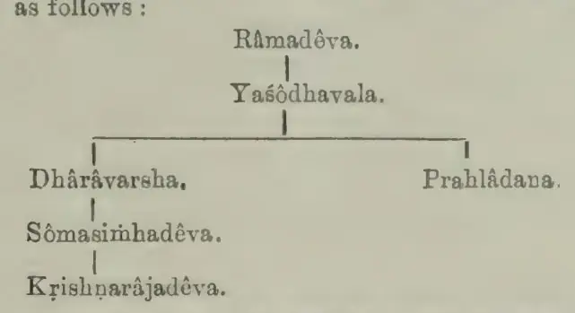

Jaina inscriptions at the temple of Nêminâtha on Mount Âbû
JAINA INSCRIPTIONS AT THE TEMPLE OF NEMINATHA
ON MOUNT ABU.
BY PROFESSOR H. LÜDERS, PH.D.; ROSTOCK.
Inked estampages of the numerous inscriptions in the various temples on Mount Ábû were prepared by Mr. H. Cousens, Superintendent of the Archæological Survey of the Bombay Presidency, in 1902, and sent by Professor Hultzsch to Professor Kielhorn, who made them over to me for publication. The 32 inscriptions edited below are from the temple of Nêminátha and refer to the erection and endowment of that building by Téjahpála, the minister of the Chaulukya king Viradhavala. At present this sanctuary seems to be known by the name of 'the temple of Vastupála and Téjahpála;' but as the inscriptions clearly show that appellation to be erroneous, the foundation being ascribed to Téjahpála alone, I should prefer either to call it after the saint to whom it was dedicated, or to use the original name which, as again shown by the inscriptions, was Lúpasiñhavasahikâ or Lúpavasahikâ.1
No. I. is engraved on a black slab built into a niche in the corridor of the temple. A translation of it was published as early as 1828 by H. H. Wilson in the Asiatic Researches, Vol. XVI. p. 302 ff. The text, together with a translation, was first edited in 1883 by Professor Abaji Vishnu Kathavate in his edition of Sôméšvaradéva's Kírtikaumudí, Appendix A. And a second edition, again accompanied by a translation, appeared in the Collection of Prákṛit and Sanskrit Inscriptions published by the Bhávnagar Archæological Department, p. 174 ff.
The writing covers a space of about 3' 1 1/2" broad by 2' 7 1/2" high. It is beautifully engraved and generally in an excellent state of preservation. The size of the letters is 1/2". The characters are Jaina Nágarî. As ba is distinguished from va only by a very minute dot in the centre, which easily disappears in the impression, it is in some cases almost impossible to decide which character was meant. The language is Sanskrit, and apart from the introductory syllable óm, a few connecting phrases in ll. 17, 26 and 30, and the concluding remarks in ll. 46 and 47, the whole inscription is in verse. The text was composed by Sôméšvaradéva, the well-known puróhita of the Chaulukya kings and author of the Kírtikaumudí; but although some of the verses undoubtedly vie in elegance with those of the larger work of the poet, it cannot be denied that the poem as a whole is disfigured by rather tedious repetitions, and sometimes by a certain want of connection between single stanzas. As regards lexicography, attention may be drawn to the architectural terms balánaka in l. 37 and khattaka in l. 40. The former apparently is identical with Marâthi balánî, which according to the Dictionary of Molesworth and Candy means 'a raised seat along the walls of the gábhárá or sabhámaṇdapa of a temple.' The word khattaka I cannot trace in any dictionary accessible to me; judging from the context, it seems to have the meaning of 'pedestal' or 'throne.' Proper names frequently appear in their Prákṛit form. Under the influence of the metre even the vulgar form Téjapála, instead of Téjahpála, is used in verse 56.
After an invocation of Sarasvatî (v. 1) and Gaṇéśa (v. 2), the inscription gives first an account of the family of Téjahpála. Their native town was Aṇahilapura, the residence of the Chulukya kings (v. 3). The ancestor of the family was Chaṇdapa (v. 4). His son was Chaṇdaprasáda (v. 5), who again had a son named Sôma (v. 6). Sôma's son was Aśvarája, whose wife was Kumáradévî (v. 7). They had eleven children (vv. 8-24)—four sons: Lúpiga,
1 [On vasahi, 'a Jaina temple,' which is to be derived from *vasathi, another form of the Sanskrit vasati, see Prof. Pischel's Grammatik der Prákṛit-Sprachen, § 207. The Kannaṇa equivalent basadi or basti is a tadbhava of vasati itself.— E. H.]
who died when he was still a youth (v. 8), Malladėva, Vastupála and Tėjahpála, and seven daughters: Jálhû, Mâû, Sâû, Dhanadêvî, Sôhagâ, Vayajukâ and Padamaladêvî. The family professed the Jaina faith (vv. 7; 10) and belonged to the lineage of the Prâgvâṭas (v. 4). The four brothers are all called ministers (mantrin, sachiva), and of Vastupála it is expressly stated that he was in the service of the Chulukyas (v. 14). Special praise is bestowed on Vastupála and Tėjahpála, who seem to have been connected by the ties of sincere brotherly affection (vv. 19-24); but these verses contain no historical allusions.
The text then turns from the ministers to their lords, the Chaulukyas as they are called here (vv. 25; 28). Only the members of the so-called Vâghcâlâ line are mentioned here, viz. Arnôrâja (v. 25), his successor Lavaṇaprasâda (v. 26), and the son of the latter, Viradhavala (v. 27). Two verses (vv. 28; 29) are added in praise of the services rendered to Viradhavala by the brothers Vastupála and Tėjahpála, and of the implicit confidence by which the king rewarded their attachment to his person.
Abruptly a description of the Arbuda mountain, the modern Mount Ābû, is introduced (vv. 30; 31), after which follows, equally abruptly, a genealogy of the Paramâras of Chandrâvati (vv. 32-42). That these verses are inserted here because Tėjahpála built a temple on Mount Ābû and this mountain was situated in the province governed by the Paramâras, can be gathered only from the contents of the last section of the inscription. The account of the Paramâras begins with the legend of their origin. Their ancestor, from whom they took their name, is said to have sprung from the altar of the sacrificial fire of Vaśishṭha and to have received the appellation of Paramâra from that sage on account of the delight he took in killing his enemies (para-mârana) (v. 32). In that family there arose first Dhûmarâja (v. 33), who was followed by Dhandhuka, Dhruvabhaṭa and others up to Râmadėva (v. 34). With Râmadėva begins a coherent pedigree which may be tabulated as follows:

Besides the genealogy the inscription furnishes several items of historical value. Yasôdhavala is said to have quickly killed Ballâla, the lord of Mâlava, when he had learned that he had become hostile to the Chaulukya king Kumârapála (v. 35). From the wording of the verse we may conclude that Yasôdhavala was a feudatory of Kumârapála when he waged war against Ballâla, just as Yasôdhavala's son Dhârâvarsha appears as a feudatory of Kumârapála's grandnephew Bhîmadėva II. in a Mount Ābû inscription of Vikrama-Saṅvat 1265.1 It is no wonder, therefore, that elsewhere we find the destruction of Ballâla attributed to Kumârapála himself. In Sômêśvaradėva's Kîrtikaumudî (II. 48) Kumârapála is said to have seized in battle, out of passion, the heads of the kings Ballâla and Mallikârjuna like the breasts of the goddess of victory. And in the Sômuâthpattan inscription of Bhâva Bṛihaspati, dated in Valabhî-Saṅvat 850 (A.D. 1169),2 he is called 'a lion to jump on the heads of (those) elephants—Ballâla, king of Dhârâ, and the illustrious ruler of Jângala.' The latest epigraphical date for Kumârapála's predecessor Jayasimhadėva is Vikrama-Saṅvat 1196.3 The earliest inscription of the reign of
1 Ind. Ant. Vol. XI. p. 221.
2 Vienna Or. Journ. Vol. III. p. 8.
3 Ind. Ant. Vol. X. p. 159 ff.
Kumârapâla himself is dated in Vikrama-Samvat 1202.1 According to Mêrutunga's Prabandha-chintâmaṇi Jayasimhadêva reigned until Vikrama-Samvat 1199,2 and in the same author's Vichâraśrêṇi the date of his death is given as the third day of the bright half of Kârttika of Vikrama-Samvat 1199, and that of his successor's coronation as the fourth day of the bright half of Mârgaśira of the same year.3 Ballâla, therefore, must have found his death between A.D. 1142 and 1169, the date of the Sômnâthpattan inscription. No king of that name, however, is found among the Paramâra rulers of Mâlava of this or, in fact, of any other period, and it is altogether improbable that Ballâla belonged to this dynasty. The question who he was and how he came to acquire the kingdom of Mâlava cannot be answered at present, but I wish to draw attention to the fact discussed at length by Professor Kielhorn4 that after the death of Yaśôvarman, which must have occurred between A.D. 1135 and 1144,5 the Mâlava kingdom was for some time in a troubled state apt to rouse the ambitions of a conqueror or usurper.
Dhârâvarsha, who seems to have been extraordinarily fond of hunting expeditions (v. 37), was an enemy of the lord of Kauñkaṇa or Koñkaṇ (v. 36), but no particulars are added. I have quoted already above the Mount Âbû inscription of Vikrama-Samvat 1265 (A.D. 1209), where Dhârâvarsha, 'the lord of Chandrâvatî, the Śambhu to the Asuras—the provincial chiefs (mâṇḍalika),' is mentioned as the feudatory of Bhîmadêva II.
His younger brother Prahlâdana is called he 'whose sword was dexterous in defending the illustrious Gûrjara king, when his power had been broken on the battle-field by Sâmantasimha' (v. 38). The Gûrjara king who was saved by Prahlâdana from Sâmantasimha, of course, was Bhîmadêva II, but it is difficult to say who that Sâmantasimha was. No further details being given and the name being not uncommon in this period, it is hardly possible to identify that prince with certainty. The person who in my opinion has the best right of being considered the Sâmantasimha of the inscription is the Guhila chief of that name mentioned in two inscriptions on Mount Âbû6 and at Sâdaḍî.7 In the former inscription8 he takes the fifth place after Vijayasimha, who must have flourished about A.D. 1125,9 and the fifth place before Têjahsimha, whose Chitôrgaḍh inscription is dated in Vikrama-Samvat 1324 = A.D. 1257.10 He thus appears to have reigned about A.D. 1200, which would well accord with the fact that his adversary Prahlâdana was yuvarâja in A.D. 1209.11 Also from a geographical point of view there is no objection to my identification, as Mêdapâta, the country of the Guhilas, bordered the district ruled by the Paramâras of Chandrâvatî. It would be quite natural therefore to find Prahlâdana defending his suzerain against the attack of a Guhila chief. That the relations between the Chaulukyas and the Guhilas were not always of a friendly nature is proved by a grant of Vîsaladêva, the son of Vîradhavala, where the king is given the epithet Mêdapâtakadêsa-kalusha-râjya-vallî-kand-ôchchhêdana-kuddâla-kalpa, 'he who resembled a hoe for rooting out the bulb of (that) creeper—the turbulent government of the Mêdapâtaka country.'12
1 Bhârnagar Inscr. p. 153 ff.
2 See the end of sarga 111.
3 Ind. Ant. Vol. X. p. 162.
4 Ind. Ant. Vol. XIX. p. 348.
5 The latest inscription of Yaśôvarman is the Ujjain plate of Vikrama-Samvat 1192, and the earliest inscription of his son Lakshmivarman is the Ujjain plate of Vikrama-Samvat 1200. See Ind. Ant. Vol. XIX. p. 349 and p. 352 f.
6 Ind. Ant. Vol. XVI. p. 347 ff.
7 Bhârnagar Inscr. p. 114 ff.
8 The Sâdaḍî inscription, which is considerably later, slightly differs in its list of names.
9 Vijayasimha's daughter was the Kalachuri queen Alhaṇadêvî, whose Bhêra-Ghât inscription is dated in the year 907 of the Kalachuri-Chêdi era = A.D. 1155; see Ep. Ind. Vol. II. p. 7 ff.
10 Journ. Beng. As. Soc. Vol. LV. Part I. p. 46 f.
11 Ind. Ant. Vol. XI. p. 222.
12 Ind. Ant. Vol. VI. p. 210.
Besides his military achievements Prahlâdana's learning is repeatedly alluded to (vv. 39; 40). This praise appears to be not unfounded. There has come down to us a vyâyóga, called Pârthaparâkrama, written by him when he was yuvarâja,1 and several single verses of his are found in the Śârñgadharapaddhati.2
As regards Sômasimhadêva, it is perhaps worth mentioning that he is stated to have remitted the taxes of Brâhmans (v. 41).
After the genealogy of the Paramâras the text returns again to the family of Têjahpâla. Vv. 43-46 are devoted to Têjahpâla's brother Vastupâla, his wife Lalitâdêvî and, particularly, their son Jayantasimha or Jaitrasimha. Vv. 47-49 are in praise of Têjahpâla himself, after which follows a description of the paternal lineage of Anupamadêvî, the wife of Têjahpâla (vv. 50-54). The account begins with Gâgâ, who belonged to the Prâgvâṭa family and was an inhabitant of Chandrâvati (v. 50). His son was Dharañga (v. 51), who was married to Trîbhuvanadêvî (v. 52). Their daughter was Anupamadêvî (vv. 53; 54). The son of Têjahpâla and Anupamadêvî was Lâvanyasimha or Lûnasimha (vv. 55-57). V. 58 contains a short note on the family of Têjahpâla's elder brother Malladêva: Malladêva and his wife Lîlukâ had a son Pûrpasimha, who was married to Allapâdêvî and had a son of the name of Pêthada.
Vv. 59 and 60 record that Têjahpâla built on the mountain Arbuda this temple of Nêminâtha for the religious merit of his wife Anupamâ and his son Lâvanyasimha, and the following verses (61-64) give some particulars about the edifice. The temple, built of white marble, was provided with a lofty maṇdapa in the front, with fifty-two shrines for the Jinas on the sides of it and a balânaka or stone seat in front of it (v. 61). There were besides ten statues representing Chanṇapa, Chanṇaprasâda, Sôma, Aśvarâja, Lûñiga. Malladêva, Vastupâla, Têjahpâla, Jaitrasimha and Lâvanyasimha, mounted on female elephants (vv. 62; 63). Behind these statues the images of those ten persons were placed once more, together with their wives, on khattakas of white marble (v. 64). The description concludes with some verses in honour of Vastupâla and Têjahpâla, extolling especially their numerous charitable institutions (vv. 65-68).
This is followed immediately by an account of the lineage of the priests of Vastupâla's and Têjahpâla's family (vv. 69-72). They belonged to the Nâgèudra gachchha, and their names, in chronological order, were: Mahèndrasûri, Śântisûri, Ânandasûri and Amarasûri,3 Haribhadrasûri, Vijayasênasûri, Udayaprabhasûri. The last, as shown by v. 71, was renowned for his poetry, specimens of which are preserved in some Girnâr inscriptions.4
The last verses of the inscription (72-74) contain some benedictions and the statement that Sômêśvaradêva, whose feet are honoured by the Chulukya king, composed this eulogy of the temple. The name of the engraver of the inscription, Chanṇdêśvara, the son of Dhândhala, the son of Kêlhana, and the date of the consecration of the temple by Vijayasênasûri, the Jaina priest mentioned above, are added in prose (ll. 46, 47). The consecration took place on Sunday, the third day of the dark half of Phâlguṇa, in the year 1287 of the glorious Vikrama. It is true the first two syllables of the name of the month are effaced, and it would be possible, therefore, a priori to restore the name of the month to Śrâvaṇa, as done e.g. by Professor Kathavate; but as the date is repeated in the inscription No. II., the reading Phâlguṇa is beyond
1 Report on Sanskrit MSS. 1872-73, p. 4. Kielhorn, Report on the search for Sanskrit MSS. in the Bombay Presidency during the year 1880-81, p. 64.
2 Nos. 748, 765, 1058 and 1071; compare Aufrecht's collection, Zeitschrift der Deutschen Morgenländischen Gesellschaft, Vol. XXVII. p. 49.
3 In the inscription No. II. Amarasûri is called Amarachandrasûri.
4 Kielhorn, List of Inscriptions of Northern India, p. 31, note 1. Udayaprabhasûri was also the author of an astrological treatise called Ārambhasiddhi; see Weber, Verzeichniss der Sanskrit- und Prâkrit-Handschriften der Kgl. Bibliothek in Berlin, No. 1741.
all doubt. The date corresponds, as shown by Professor Kielhorn,1 to Sunday, 3rd March A.D. 1230.
Of the inscription No. II. only a short account was published by H. H. Wilson in the Asiatic Researches, Vol. XVI. p. 309 f. It was edited in full by Professor Abaji Vishnu Kathavate as Appendix B. to his edition of the Kîrtikaumudi. It is engraved on a white slab built into a niche in the corridor of the temple. The writing covers a space of about 2' 11" broad by 1' 10" high. The size of the letters is . Near the beginning and at the end of ll. 1 and 2 and at the end of ll. 3 and 4 the text is mutilated, portions of the slab being either cut off or broken off. The characters are of the same type as in No. I. The initial ô in ôm (l. 1) differs from the corresponding sign in Óisavúla (ll. 15, 17, 24) and Órásá (l. 27) by the addition of a cross-bar. The letter ba is expressed by the sign for va everywhere, except in Śrímátámahabu in l. 27 and Arbudas in the last but one line. The writing of the last two lines, however, shows also some other peculiarities. The characters are partly larger, and generally executed with far less care, than those in the preceding portion of the inscription. As regards single letters, the divergences are especially prominent in the signs for ra and śa and medial é and ô, the latter being expressed by means of a stroke above the line six times, in bhéjáté, bhavané, -pánthé, -súrér, tayôh and vilôkyamáné, whereas only three instances of this mode of writing are found in the preceding 31 lines, in varshé (l. 1), -dévéna (l. 26) and Gósala (l. 13). There can be little doubt, therefore, that those two lines are a later addition, and this, as will appear later on, is fully borne out by their contents.
The inscription is in the Sanskrit language and, with the exception of one verse in l. 30, in prose. As usual in records of this period and of this part of the country, the language is largely influenced by the vernacular idiom. Proper names generally appear in their Prâkrit form, and even instead of Skt. putra we find here the abbreviation u, which stands for Prâkrit utta or, perhaps, a half-Sanskritized utra2 (ll. 10-25). Also the form kumara instead of kumára in l. 26 is due to Prâkrit influence. The single members of Dvandva compounds are frequently joined by tathá (ll. 8, 9, 12, 19, 27). As regards lexicography, the following words may be mentioned: apabhára, m., 'a burden' (l. 29); áshṭáhiká, f., 'a single day of a festival lasting eight days' (ll. 12, 14, 16, etc.); kalyánika, n., 'name of a certain feast' (l. 26);3 tathájñátíya, 'belonging to the tribe mentioned before' (ll. 10 ff.); mahájana, m., 'a merchant, banker' (l. 10);4 ráthiya, m., which seems to denote a certain class of officials (l. 28); varshagranthi, m., 'an anniversary' (l. 12);5 satka, 'belonging to' (ll. 3, 7, 10); sárá, f., 'care, supervision' (l. 9).6 In line 6 pratishṭhita is used in the sense of pratishṭhápita.
The inscription contains the official record of the erection of the temple of Néminátha, and regulations for the festivals connected with it and for the protection and maintenance of the building.
In lines 1-5 it is stated that 'to-day on Sunday, the third day of the dark half of the common Phálguna, in the [Vikrama] year 1287, while in prosperous Aṇahilapáṭaka the mahárájádhirája Bh[imadēva], the royal swan on the lotus of the Chaulukya family, who is adorned by a complete line of kings, is reigning victoriously, . . . . while the mahámaṇdalésvara rájakula, the illustrious Sômasimhadēva, born in the family of the illustrious
1 List of Inscriptions of Northern India, p. 30.
2 This form is actually found in a Chaulukya grant of A.D. 1207, plate i. ll. 14, 15; pl. ii. ll. 4, 5, 6. See Ind. Ant. Vol. XI. p. 338.
3 See below, p. 206.
4 Compare Ep. Ind. Vol. I. p. 279, note 46. The word occurs in this sense in the Chaulukya grant of A.D. 1207, mentioned in note 2 above, plate ii. l. 10. In l. 14 of the present grant the abbreviation mahájani5 is found.
5 Compare Maráthi varshagdāntha, 'the anniversary of a birth-day.'
6 See below, p. 205, note 2.
Dhúmarájadéva who had sprung from the sacrificial fire of the altar of the holy Vaśishṭha, is reigning victoriously,' Téjahpála caused to be made in the village of Déulaváđá on the top of the holy mountain Arbuda the temple of the holy Nêminátha, called Lúṇasimḥavasahiká, adorned by all shrines (dévakuliká) and embellished by a large elephant-hall (hastiśálá), for the increase of the glory and merit of his wife Anupamadévi and his son Lúṇasimḥa. The inscription gives the same pedigree of Téjahpála as No. I., and he is besides described here as 'conducting the whole seal business of the mahámaṇḍalésvara ráṇaka, the illustrious Víradhavaladéva, the son of the mahámaṇḍalésvara ráṇaka, the illustrious Lavaṇaprasádadéva, born in the family of the illustrious Chaulukyas, in the province (maṇḍala) of . . . . râtrá, [obtained] by the favour of the aforesaid mahárájádhirája, the illustrious Bhimadéva.'
This passage is of special interest as revealing the nature of the relations between Bhímadéva II. and the members of the Vághélâ dynasty, which in Somésvaradéva's account remains rather obscure. The inscription leaves no doubt that Bhímadéva II. was considered lord paramount, while Lavaṇaprasáda and Víradhavala contented themselves with the rank of a mahámaṇḍalésvara and the title of ráṇaka. Unfortunately the name of the province governed by Víradhavala is lost with the exception of the last two syllables, . . . . ritrá, which I am unable to restore.1
As regards the Paramáras of Chandrávati, the inscription shows that in A.D. 1230 the reigning prince was Sômasimḥa, and not Kṛishparája as might easily be supposed from the text of No. I. I would also point out that the legend told in No. I. of Paramára is here ascribed to Dhúmarája.
The date corresponds, as mentioned already above, to Sunday, 3rd March A.D. 1230. The shrines and the elephant-hall mentioned in the description of the temple are identical, of course, with the fifty-two shrines for the Jinas and the hall for the statues of the members of Téjahpála's family spoken of in vv. 61-64 of the inscription No. I.
The record of the erection of the building is followed by that of its consecration by Vijayasēnasūri (l. 6). The pedigree of the latter perfectly agrees with that given in the former inscription. Haribhadrasūri is here called 'the lord of the frontlet decoration (paṭtálaṅkaraṇaprabhu) by the illustrious Āṇandasūri and the illustrious Amarachandrasūri,' which apparently means that he had received his paṭṭábhishéka from the hands of those two súris.
The purport of the next section (ll. 6-9) is indicated already by the heading: 'And the names of the śrávaka trustees appointed for this temple (are) as follows.' Here it is set down that all bathing, worshipping, supervising,2 etc., in this temple is to be done and carried on for ever by the brothers Malladéva, Vastupála and Téjahpála and their descendants, as well as by all the male members of the family of Lúṇasimḥa's mother Anupamadévi and their descendants. On this occasion a pedigree of Anupamadéví's family, which resided at Chandrávati and belonged to the Prágváṭa jñáti, is inserted.
The following section (ll. 9-25) consists of rules for the festival to be celebrated on the anniversaries of the consecration of the temple. It was to begin on the third day of the dark half of the month Chaitra, holy to the god,3 and to last for eight days. During this festival the ceremonies of bathing, worshipping, etc., were to be performed by the laymen (śrávaka) of
1 Ind. Ant. Vol. VI. p. 190, Dr. Bühler has endeavoured to define the boundaries of the territory ruled by the Vághélâ branch.
2 The word sárd occurs again in the Chaulukya grant of A.D. 1207 in the phrase: asya dharmasthánasya ātair=ushtabhir=góshṭhikai rāūla-Uchchadéva-sahitair=á-chaṅdr-árkaṅ sárá karaṇṭyá; Ind. Ant. Vol. XI. p. 338, piate ii. ll. 3-6. It has possibly a more special meaning than supervision.
3 This seems to be the meaning of dévakiya.
the country of Chandrávati,1 each day being assigned to a certain local community. The inscription enumerates many of these laymen by name, adding in each case the name of the father and the jñáti. About half of them belonged to the Prágváṭas; the rest was divided between the Źesaválas or Óisaválas, the Śrímálas and the not very numerous Dharkaṭas. The places inhabited by them were the villages of Umbaraniki, Saraüli and Kásahrada,2 Brahmáṇa, the village of Dhaüli, the great tírtha Muṇḍasthala, the villages of Philiṇi, Haṇdáudrá and Davāṇi, Gadáhaḍa, Sáhilaváḍa.
In a subsequent clause (ll. 25, 26) it is stipulated that the five kalyánikas of Nêminâthadêva, i.e. the feasts on the anniversaries of the conception, birth, initiation, enlightenment and final deliverance of the saint, are to be celebrated annually on the fixed days by all the laymen (śrávaka) residing at Dêülaváḍa on the holy mountain Arbuda.
'The names of the persons to whom the care of the temple was entrusted are recorded in the next section, which runs as follows (ll. 26-30): 'Thus is this agreement: The lord of the prosperous Chandrávati, the illustrious rájakula Sômasimhadêva; again his son, the illustrious rája[kula] Kánhadadêva, and the other princes, all royal persons; again the sthánapatis bhaṭtárakas, etc., of the prosperous Chandrávati, kavilása;3 again the Gúgulí Bráhmaṇs,4 all the trustees (who belong to the caste of the) merchants; again all persons, (viz.) sthánapatis, ascetics, Gúgulí Bráhmaṇs, ráthiyas and others, residing at (the temples of) the holy Achaléšvara (and) the holy Vaśishṭha on the mountain Arbuda and in the neighbouring villages, (viz.) the village of Dêülaváḍa, the prosperous village of Śrímátámahabu, the village of Âbuya, the village of Ôrásá, the village of Źtarachha, the village of Sihara, the village of Sála, the village of Hêṭhaüñji, the village of Âkhi, Kôṭaḍi belonging to the holy Dhándhaléšvaradêva, and others—twelve villages (in all); again all the rájaputras belonging to the race of the illustrious Pratiháras, residing in the villages of Bhálibháḍa, etc., having sat down one by one in the hall of (the temple of) the holy Nêminâthadêva, took upon themselves, each according to his own wish (and) for his own delight, from the mahan[ta], the illustrious Têjaḥpála, the whole burden of the care of this temple called the holy Lúṇasíhavasahiká. Therefore, acting up to this promise of their own, all of them, as well as their descendants, have to take care of this temple as long as the sun and the moon (endure). For—
'What need is there of alms-bowl, water-jar, clothes of bark, white (or) red garments (and) tufts of twisted hair, (since) this splendid vow is performed by the noble-minded?'
Prince Kánhadadêva mentioned in line 26 is identical, of course, with the Paramára Kṛishnarájadêva spoken of in the former inscription.
The last line (31) records that the mahárájakula, the illustrious Sômasimhadêva, in this holy Lúṇasimhavasahiká, presented by an edict the village of Davāṇi in Váhirahadí to the holy Nêminâthadêva, for his worship and personal allowance, and the inscription concludes with Sômasimhadêva entreating the future kings of the Pramára race to protect his gift as long as the sun and the moon will last.
1 I take the term 'the body of the śrávakas, namely, all the merchants, all the trustees of Jina temples, etc. belonging to Chandrávati' as the collective designation of the persons enumerated in detail later on.
2 [According to Forbes, Rás Málá, p. 64, Kásahrada is the present Kásindra-Pálaḍi near Ahmadábád; see Bühler, Ep. Ind. Vol. I. p. 229. It is mentioned in two Ráshṭrakúṭa grants, ibid. p. 57 (Kásadraha), and Ind. Ant. Vol. XIV. p. 202 (Kásahrada).— E. H.]
3 Perhaps kavilása is a proper name; at any rate, I do not know its meaning.—[Can it be meant for Kailása?— E. H.]
4 The Gúgulis, or Guglis as they are called now, are a class of Bráhmaṇs who at present are found chiefly in Dvárká. They are Vaishnavas by religion and mostly pujáris or priests in the temples of Kṛishna; compare Gazetteer of the Bombay Presidency, Vol. VIII. p. 146, and Vol. IX. Part I. p. 9 f., where also an account of the legend relating to their origin is given.
Of the localities mentioned in the inscription I have been able to identify the following on es The village of Dēūlaváđâ on the mountain Arbuda is the Dilwara of the Indian Atlas, situated lat. 24° 36' N.; long. 72° 43' E. The village of Umbaraniki is the Umarni of the map, 7 miles south-south-east of Dilwara. The village of Dhaūli is Dhauli, 8½ miles west-south-west of Dilwara. The great tîrtha of Muṇđasthala is perhaps identical with the Murthala of the map, 8½ miles south-east of Dilwara. The village of Gađâhađa may be identified with the Gadara of the map, 11 miles south-south-west of Dilwara, supposing Gadara to stand for Gađâra (Gađâđa). Sâhilaváđâ is Selwara, 8½ miles west-north-west of Dilwara. Among the villages expressly stated to be in the vicinity of the mountain Arbuda, Âbuya is the Abu of the map, 1½ miles south-west of Dilwara. Útarachha is Utraj, 5½ miles north-east of Dilwara. Sihara is Ser, 8 miles north-east of Dilwara. Hêthaūnji is Hetamji, 2 miles south of Dilwara. Kôṭađ1 may be the Kotra of the map, 7 miles east of Dilwara. Sâla possibly is identical with Salgaon, 1 mile east-south-east of Dilwara. Ôrásâ bears a certain resemblance to Oria, the name of a village 3 miles north-east of Dilwara, although an identification of the two would be possible only by assuming the form of the name, as given in the map, to be incorrect.
The last two lines of the inscription, which, as stated above, are a later addition, contain two Sanskrit verses in praise of Mount Âbû by Nayachandrasûri, a descendant of the holy rishî Kṛishna, and a short notice in the vernacular, recording the fact that some pilgrim visited the sanctuary to worship there.1
The shorter inscriptions Nos. III.-XXXII., all of which are edited now for the first time,2 are written in Nâgarî characters of the Jaina type and composed in the Sanskrit language, although proper names mostly appear in their Prâkrît form. Once, in Chamṇapa in No. IV. l. 1, đa shows the peculiar shape given in Bühler's Indische Palæographie in Plate V. col. XVI. l. 22, from an inscription of Bhîmadêva I.
No. III., which is engraved on the lintel of the doorway to the main shrine, records that Têjapâla caused to be made the great shrine (mahâtîrtha) of the holy Nêminâtha in this Lûnavasahikâ for the religious merit of his son Lûṇasiha 'on Monday, the third day of the bright half of Phâguṇa (Phâlguna) in the year 1287 of king Vikrama.' According to Professor Kielhorn, who kindly calculated this and the following dates for me, the date is incorrect for both V. 1287 expired and V. 1287 current. It would correspond, for V. 1287 expired, to Friday, 7th February A.D. 1231, and for V. 1287 current, to Sunday, 17th February A.D. 1230.
The inscriptions Nos. IV.-XXXII. prove that Têjahâla in the following years also did not cease to enlarge and embellish the sanctuary which he had created. They are engraved on the lintels of several cell shrines in the corridor of the temple and record the erection of those shrines, or of images of Jinas and tîrthakaras, by Têjahâla for the religious merit of various members of his family.
Of general interest are the titles occurring in these inscriptions. The one most frequently used is maham°, the abbreviated form of mahanta. It is borne by Têjahâla and most of the members of his family, both men and women. But in the pedigrees contained in Nos. XXIV. and XXVI.-XXXI. Têjahâla's ancestors Chanṇapa and Chanṇaprasâda, his father Aśvarâja or Âsarâja, and his mother Kumâradêvî are given the title of ṭha°, which stands for ṭhakkura, whereas Sôma, the son of Chanṇaprasâda and father of Aśvarâja, is constantly styled maham°.3 This clearly shows that there must have been some distinction between the two titles, though the difference cannot have been very great, as Chanṇapa and Aśvarâja are called also maham° in
1 I do not fully understand this sentence. Records like this are not infrequent on Mount Âbû.
2 Wilson has noticed them only in a general way in the Asiatic Researches, Vol. XVI. p. 310, No. XX.
3 The pedigree in No. II. l. 3 f. shows the same distinction.
Nos. III.-VIII., X.-XVIII., XXI.-XXIII. and XXXII.1 In No. XXXII. we find ṭhakurājñī as the title of Samtôshâ, the mother of Têjaḥpâla's second wife Suhadâdêvî, whose maternal grandfather and great-grandfather are called ṭha°. As shown by Nos. XXVI., XXVII. and XXX., Vastupâla, the elder brother of Têjaḥpâla, bore the title of saṅghapatî.2 From the ninth sarga of the Kîrtikaumudî it appears that he had earned this title by organising and conducting a great pilgrimage to the tîrthas of Śatruṅjaya, Raivataka and Prabhâsa. The title itself is alluded to in sarga IX. verse 12, where it is said: 'He dined when all (others) had dined; he went to sleep when all the (other) pilgrims had fallen into slumber; he was the first to awake. In this manner he performed the vow of being a saṅghaprabhu.'3 Seven times female relatives of Têjaḥpâla are given the title of búî (Nos. IV., XI., XXVI., XXVII., XXIX.-XXXI.)
No. XXXII. mentions the Môdha jñâti in Pattana as the tribe to which the family of Suhadâdêvî, the second wife of Têjaḥpâla, belonged.
The saints whose images were set up are the Jina Supârśva (No. XII.), Muni Suvrata (No. XXI.), Vârisêṇa4 (No. XXIV.), Chandrânana (No. XXV.), the eternal Jina Rishabbha (No. XXX.), the eternal Jina Vardhamâna (No. XXXI.), and the tîrthakaras5 Sîmaṅdharasvâmin6 (No. XXVI.), the Jina Yugaṅdharasvâmin (No. XXVII.), the Jina Bâhu (No. XXVIII.), and Subâhu (No. XXIX.).
Nos. IV.-XVIII. are dated in the Vikrama year 1288; Nos. XIX.-XXIII. in the Vikrama year 1290; Nos. XXIV. and XXV. on the seventh day of the dark half of Chaitra in the Vikrama year 1293; Nos. XXVI.-XXXI.7 on Friday, the eighth day of the dark half of Chaitra in the Vikrama year 1293, which, for the Kârttikâdi V. 1293 expired and the pûrpimânta Chaitra, regularly corresponds to Friday, 20th February A.D. 1237; No. XXXII. is dated on Thursday, the fourteenth day of the dark half of Vaiśâkha in the Vikrama year 1297, which, for the Kârttikâdi V. 1297 expired and the pûrpimânta Vaiśâkha, regularly corresponds to Thursday, 11th April A.D. 1241.
No. I.8
TEXT.
1 श्री9 ॥ वंदे सरस्वतीं देवीं याति या कि[व]मानसं । नी[यमा]ना
[निजेने]व [यानमा]नस[व]ासिन[ा ।] १ यः [च]ांतिमा[नप्य]रु[णः
प्रकोपे शांतोपि दीप्त]ः स्मरनिग्रहाय । निमीलिताच्चो[पि सम]ग्रदर्शी
स वः शिक्कयास्तु शि-
1 Similarly in the pedigree of Têjaḥpâla's wife Anupamadêvî in No. II. l. 7 f. four persons are called maham°, while the rest is styled ṭha°.
2 The same title is applied to Vastupâla in No. II. l. 4.
3 The title of saṅghapatî occurs also in the Śatruṅjayamâhâtmya. According to XIV. 84 ff. it was conferred by Pârśva on his relative Hastisêṇa, who afterwards undertook a pilgrimage to various holy places.
4 The correct Sanskrit form would be Vârishêṇa.
5 The four tîrthakaras are distinguished by the epithet viharamâṇa, the exact meaning of which is unknown to me.
6 The Jina Sîmaṅdharasvâmin is known from Hêmachandra's Sthavirâvalicharita, IX. 95 ff. and the Śatruṅjayamâhâtmya, I. 163.
7 Of No. XXVIII. the first line (containing the date) is lost, but it is almost certain that the inscription was dated in the same year.
8 On a black slab built into a niche in the corridor. No. 1740 of Mr. Cousens's list.
9 Expressed by a symbol.
2 [वात]नूजः ॥ २ अणहिलपुरमस्ति स्वस्तिपात्रं प्रजा[नाम]जरजिर[घृतुत्थै]ः
पा[त्य]मानं चु[लुक्यै]ः । [चिरम]तिरमणीनां य[त्र वक्त्रै]दु[मंदी]कत
इव [सि]तपक्षप्रक्षयेष्यंधकारः ॥ ३ तत्र प्राग्वाटान्वयमुकुटं कुटजप्रसून-
3 विशदयशाः । दानविनिर्जितकल्पद्रुमषंडशंडपः समभूत् ॥ ४ चंडप्र[सा]द-
सं[ज्ञ]ः स्वकुल[प्रासा]दहेमदंडो ऽस्य । प्रसर[त्की]र्त्तिपताकः पुण्यवि-
पाकेन सूनुरभूत् ॥ ५ आत्मगुणैः किरणैरिव सोमो रोमोद्गमं
सतां कु- ॥1
4 र्वन् । उदगादगाधमध्यादुग्धीदधिवांधवात्तस्मात् ॥ ६ एतस्मादजनि
जिनाधि[ना]थभक्तिं विभ्राणः स्वमनसि शश्वदश्वरा[ज]ः । तस्यासीद्दयि-
ततमा कुमारदेवी देवीव त्रिपुररिपोः कुमारमाता ॥ ७ तयोः
प्रथमपु- ॥
5 त्री ऽभून्मत्री लूणिगसंज्ञया । दैवादवाप बाली ऽपि सालोक्यं [व]ा-
सवेन [स]ः ॥ ८ पूर्व्वमेव सचिवः स कीविदैर्गण्यते स्म गुणवत्सु
लूणिगः । यस्य निस्तुषमतेर्मनीषया धिकृतेव धिषणस्य धीरपि ॥ ९
श्रीमल्लदेवः श्रि-
6 तमल्लिदेवस्तस्यानुजो मंत्रिमतल्लिकाऽभूत् । बभूव यस्यान्यधनांगनासु लुब्धा
न बुद्धिः शमलब्धबुद्धेः ॥ १० धर्माविधाने भुवनच्छिद्रपिधाने विभिन्न-
संधाने । मृष्टिकृता न हि सृष्टः प्रतिमल्लो मल्लदेव- ॥
7 स्य ॥ ११ नीलनीरदकट्स्वकमुक्तश्वेतकेतुकिरणोद्धरणेन । मल्लदेवयशमा
गलहस्तो हस्तिमल्लदशनांशुषु दत्तः ॥ १२ तस्यानुजो विजयते
विजितेंद्रियस्य सारस्वतामृतकृताद्भुतहर्षवर्षः । श्रीवस्तु-
8 [पा]ल इति भालतलस्थितानि दीस्थ्याक्षराणि सुकृती कृतिनां विलुंपन् ॥
१३ विरचयति वस्तुपालश्चुलुक्यसचिवेषु कविषु च प्रवरः । न कदाचि-
दर्थहरणं श्रीकरणे काव्यकरणे वा ॥ १४ तेजःपालः पालितस्वा-
9 मितेजःपुंजः सोयं राजते मंत्रिराजः । दुवृत्तानां शंकनीयः कनीयानस्य भ्राता
विश्वविभ्रांतकीर्त्तिः ॥ १५ तेजःपालस्य विष्णोश्च कः स्वरूपं निरूपयेत् ।
स्थितं जगत्त्रयीसूत्रं यदीयोदरकंदरे ॥ १६ जाल्लूमाऊसाऊ-
10 धनदेवीसोहगावयजुकाख्याः । पदमलदेवी चैषां क्रमादिमाः सप्त सोदर्थः ॥ १७
एते ऽश्वराजपुत्रा दशरथपुत्रास्त एव चत्वारः । प्राप्ताः किल पुनरवना-
वेकीदरवासलोभेन ॥ १८ अनुजन्मना समेतस्तेजपाः- ।
1 These strokes as well as those at the end of ll. 4, 6, 10, 12, 13, 15, 17, 20, 21, 26, 31, 33, 36, 39, 41, 42 are merely intended for filling up the line.
11 लेन वस्तुपाली ऽयं । मदयति कस्य न हृदयं मधुमासो माधवेनेव ॥ १८
पंथानमेको न कदापि गच्छेदिति स्मृतिप्रोक्तामिव स्मरंतौ । सहोदरौ
दुर्द्वरमोहचौरे संभूय धर्माध्वनि तौ प्रवृत्तौ ॥ २० इदं सदा सो-
12 दरयोरुदेतु युगं युगव्यायतदोर्युगश्च । युगे चतुर्थेष्वनघेन येन कृतं कृतस्या-
गमनं युगस्य ॥ २१ सुक्तामयं शरीरं सोदरयोः सुचिरमेतयोरस्तु ।
सुक्तामयं किल महीवलयमिदं भाति यत्कीर्त्या ॥ २२ ए- ।
13 कोत्पत्तिनिमित्तौ यद्यपि पाणी तयोस्तथाप्येकः । वामो ऽभूदनयोनं तु
सोदरयोः कोपि दक्षिणयोः ॥ २३ धर्मस्थानांकितामुर्खी सर्व्वतः कुर्वता-
ऽमुना । दत्तः पादो बलाद्धंधुयुगलेन कलेर्गले ॥ २४ इतश्चीलुक्यवीरा- ।
14 णां वंशे शाखाविशेषकः । अर्षोराज इति ख्यातो जातस्तेजीमयः पुमान् ॥ २५
तस्मादनंतरमनंतरितप्रतापः प्राप क्षितिं क्षतरिपुर्लवणप्रसादः । स्वर्गापगा-
जलवलक्षितशंखशुभ्रा वभ्राम यस्य लवणाब्धिमतीत्य कीर्त्तिः ।
15 ॥ २६ सुतस्तस्मादासीदृशरथककुस्थप्रतिकृतेः1 प्रतिक्ष्मापालानां कवलितबलो वीर-
धवलः । यशःपूरे यस्य प्रसरति रतिक्षांतमनसामसाध्वीनां भग्नाऽभिसरण-
कलायां कुशलता ॥ २७ चौलुक्यः सुकृती स वीरधवलः क- ।
16 र्षेजपानां जपं यः कर्षेपि चकार न प्रलपतामुद्दिश्य यौ मंत्रिणौ ।
आभ्यामभ्युदयातिरेकरुचिरं राज्यं स्वभर्त्तुः कृतं वाहानां निवहा घटाः
करटिनां बडाश्च सौधांगणे ॥ २८ तेन मंत्रिद्वयेनायं जाने जानूप-
वर्त्तिना । वि-
17 भुर्भुजद्वयेनेव सुखमाश्लिष्यति श्रियं ॥ २९ इतश्च ॥ गौरीवरश्चशुरभूधरसंभवो
ऽयमस्त्यर्बुदः ककुदमद्रिकदंबकस्य । मंदाकिनीं घनजटे दधदुत्तमां[गे] यः
श्यालकः शशिभृतो ऽभिनयं करोति ॥ ३० क्वचिदिह विहरंतीर्व्वीं- ।
18 क्षमाणस्य रामाः प्रसरति रतिरंतर्मोक्षमाकांक्षतो ऽपि । क्वचन सुनि-
भिरर्थ्यां पश्येतस्तीर्थवीथीं भवति भवविरक्ता धीरधीरात्मनो ऽपि ॥ ३१
श्रेयःश्रेष्ठवशिष्ठहोमहुतभुक्कुंडान्मृतंडात्मजप्रयोताधिकदेहदीधितिभ-
19 रः कोप्याविरासीन्नरः । तं मत्वा परमारणैकरसिकं स व्याजहार श्रुतेरा-
धारः परमार इत्यजनि तन्नामाऽथ तस्यान्वयः ॥ ३२ श्रीधूमराजः प्रथमं
बभूव भूवासवस्तत्र नरेंद्रवंशे । भूमीभृतो यः कृतवानभिज्ञान् पक्षद्वयोच्छे-
20 दनवेदनासु ॥ ३३ धंधुकभ्रुवभटादयस्ततस्ते रिपुद्विपघटाजितो ऽभवन् ।
यत्कुले ऽजनि पुमान्मनोरमो रामदेव इति कामदेवजित् ॥ ३४ रोदः-
कंदरवर्त्तिकीर्त्तिलहरोलिमामृतांशुद्युतेरप्रद्युम्नवशो यशोधवल इ- ।
1 °ककुस्थ° would be more correctly written °ककुत्स्थ°.
21 त्यासीत्तनूजस्ततः । यश्चौलुक्यकुमारपालनृपतिप्रत्यर्थितामागतं मत्वा सत्वरमेव मालवपतिं 1बल्लालमालभ्ववान् ॥ ३५ शत्रुश्रेणीगलविदलनोन्निद्रनिस्तृंशधारो2 धारावर्षः समजनि सुतस्तस्य विश्वप्रशस्यः । क्रोधाक्रांतप्र- ।
22 धनवसुधानिश्चले यत्र जाताध्योतन्नेत्रोत्पलजलकणाः कौंकणाधीशपत्न्यः ॥ ३६ सोयं पुनर्दाशरथिः पृथिव्यामव्याहतौजाः स्फुटमुज्जगाम । मारीचवैरादिव यो ऽधुनापि [मृ]गव्यमव्यग्रमतिः करोति ॥ ३७ सामं-
23 तसिंहसमितिक्षितिविक्षतौजःश्रीगूर्ज्जरक्षितिपरक्षणदक्षिणासिः । प्रह्लादनस्तदनृजो दनुजोत्तमारिचारित्रमत्र पुनरुज्जलयांचकार3 ॥ ३८ देवी सरोजासनसंभवा किं कामप्रदा किं सुरसौरभेयो । प्रह्लादनाकारधरा
24 धरायामायातवत्येष न निश्चयो मे ॥ ३९ धारावर्षसुतो ऽयं जयति श्रीसोमसिंहदेवो यः । पितृतः शौर्यं विद्यां पितृव्यकाद्दानमुभयतो जगृहे ॥ ४० मुक्ता विप्रकरानरातिनिकरान्निर्जित्य तत्किंचन प्रापत्संप्रति सोम-
25 सिंहनृपतिः सोमप्रकाशं यशः । येनोर्ब्वीतलमुज्जलं4 रचयताप्युत्ताम्यतामीर्घ्यया सर्वेषामिह विद्विषां न हि सुखान्मालिन्यमुन्मूलितं ॥ ४१ वसुदे-वस्थेव सुतः श्रीक्षणः क्षणराजदेवो ऽस्य । मात्राधिकप्रतापो यशोद-
26 यासंश्रितो जयति ॥ ४२ इतश्च ॥ अन्वयेन विनयेन विद्यया विक्रमेण सुकृतक्रमेण च । क्वापि कोपि न पुमानुपैति मे वस्तुपालमदशो दृशोः पथि ॥ ४३ दयिता ललितादेवी तनयमवीतनयमाप सचिवेंद्रात् । नाम्ना जयंत- ।
27 सिंहं जयंतमिंद्रात्पुलोमपुत्रीव ॥ ४४ यः शैशवे विनयवैरिणि बोधवंध्ये धत्ते नयं च विनयं च गुणोदयं च । सोयं मनोभवपराभवजागरूकरूपो न कं मनसि चुंबति जैत्रसिंहः ॥ ४५ श्रीवस्तुपालपुत्रः कल्पायुरयं जयं-
28 तसिंहो ऽस्तु । कामादधिकं रूपं निरूप्यते यस्य दानं च ॥ ४६ स श्रीतेजःपालः सचिवश्चिरकालमस्तु तेजस्त्री । येन जना निश्चिंताश्चिंता-मणिनेव नंदंति ॥ ४७ यच्चाणक्यामरगुरुमरुद्वग्राधिशुक्रादिकानां प्रागुत्पादं व्यधित भुवने
29 मंत्रिणां बुद्धिधाम्नां । चक्रे ऽभ्यासः स खलु विधिना नूनमेनं विधातं तेजःपालः कथमितरथाधिक्यमापैष तेषु ॥ ४८ अस्ति स्वस्तिनिकेतनं तनुभृतां श्रीवस्तुपालानुजस्तेजःपाल इति स्थितिं बलिकृतामुर्ब्वीतले पाल-यन् । आत्मीयं व-
30 हु मन्यते न हि गुणयामं च कामंदकिश्चाणक्योपि चमत्करोति न
हृदि प्रेक्षास्पदं प्रेक्ष्य यं ॥ 8६ इतश्च ॥ महं° श्रीतेजःपालस्य पत्न्याः श्रीअनुप-
मदेव्याः पितृवंशवर्ष्णं ॥ प्राग्वाटान्वयमंडनैकमुकुटं श्रीसांद्रचंद्रावतीवास्तव्यः स्त-
31 वनीयकीर्त्तिलहरिप्रक्षालितक्ष्मातलः । श्रीगागाभिधया सुधीरजनि यद्वृत्तानु-
रागादभूत्को नामप्रमदो न दोलितशिरा नोद्भूतरोमा पुमान् ॥ ५० अनु-
सृतसज्जनसरणिर्धरणिगनामा बभूव तत्तनयः । स्वप्रभुहृदये ।
32 गुणिना हारेणेव स्थितं येन ॥ ५१ त्रिभुवनदेवी तस्य त्रिभुवन-
विख्यातशीलसंपन्ना । दयिताऽभूदनयोः पुनरंगं देधा मनस्त्वेकं ॥ ५२
अनुपमदेवी देवी साक्षाद्दाक्षायणीव शीलेन । तदुहिता सहिता श्रीतेजः-
पालेन
33 पत्याऽभूत् ॥ ५३ इयमनुपमदेवी दिव्यवृत्तप्रसूनव्रततिरजनि तेजःपालमंत्री-
शपत्नी । नयविनयविवेकीचित्यदाक्षिण्यदानप्रमुखगुणगणेंदुयोतिताशेषगोत्रा ॥ ५४
लावण्यसिंहस्तनयस्तयोरयं रयं जयन्नि- ।
34 [द्र]यदुष्टवाजिनां । लब्धापि मीनध्वजमंगलं वयः प्रयाति धर्मैकविधा-
यिनाऽध्वना ॥ ५५ श्रीतेजपालतनयस्य गुणानमुष्य श्रीलूणसिंहक्तिनः कति
न स्तुवंति । श्रीबंधनोद्धुरतरैरपि यैः समंतादुद्दामता त्रिजगति क्रि-
35 यते स्म कीर्त्तेः ॥ ५६ गुणधननिधानकलशः प्रकटो ऽयमवेष्टितश्च खलसपैः ।
उपचयमयते सततं सुजनैरुपजीव्यमानो ऽपि ॥ ५७ मल्लदेवसचिवस्य
नंदनः पूर्णसिंह इति लीलुकासुतः । तस्य नंदति सुतीयमह्लणा-
36 देविभूः सुक्ततवेश्म पेथडः ॥ ५८ अभूदनुपमा पत्नी तेजःपालस्य
मंत्रिणः । लावण्यसिंहनामायमायुष्मानेतयोः सुतः ॥ ५९ तेजःपालेन पुण्यार्थं
तयोः पुत्रकलत्रयोः । हम्मर्शं श्रीनेमिनाथस्य तेने तेनेदमबुंदे ।
37 ॥ ६० तेजःपाल इति क्षितींदुसचिवः शंखोज्वलाभिः1 शिलाश्रेणीभिः स्फुर-
दिंदुकंदरुचिरं नेमिप्रभोर्मदिरं । उच्चैर्मडपमयतो जिन[वरा]वासद्विपंचाशतं
तत्पार्श्वेषु बलानकं2 च पुरतो निष्पादयामासिवान् ॥ ६१ श्रीमच्चंड-
38 [प]संभवः [सम]भवच्चंडप्रसादस्ततः सोमस्तव्यभवो ऽश्वराज इति तत्पुत्राः
पवित्राशयाः । श्रीमल्लूणिगमल्लदेवसचिवश्रीवस्तुपालाह्वयास्तेजःपालसमन्विता
जिनमतारामोन्नमन्नीरदाः ॥ ६२ श्रीमंत्रीश्वरवस्तुपालतनयः श्रीजै-
39 त्रसिंहाह्वयस्तेजःपालसुतश्च विश्रुतमतिर्लावण्यसिंहाभिधः । एतेषां दश मूर्त्तयः
करिवधस्कंधाधिरूढाश्चिरं राजंते जिनदर्शनार्थमयतां दिग्नायकानामिव ॥
६३ मूर्त्तीनामिह ष्टतः करिवधूपृष्ठप्रतिष्ठाजुषां तन्मूर्त्तीर्विम- ।
1 Read शंखीज्वलाभिः,
2 Possibly the reading is वलानकं,
40 लाश्मखत्तकगताः कांतासमेता दश । चौलुक्यक्षितिपालवीरधवलस्याद्वैतवंधुः सुधीस्तेजःपाल इति व्यधापयदयं श्रीवस्तुपालानुजः ॥ ६४ तेजःपालः सकलप्रजोपजीव्यस्य वस्तुपालस्य । सविधे विभाति सफलः
41 सरीवरस्येव सहकारः ॥ ६५ तेन भ्रातृयुगेन या प्रतिपुरयामाध्वशैलस्थलं वापीकूपनिपानकाननसरःप्रासादसत्रादिका1 । धर्मस्थानपरंपरा नवतरा चक्रे ऽथ जीर्णोद्धृता तत्संख्यापि न बुध्यते यदि परं तर्हेदि- ।
42 नी मेदिनी ॥ ६६ शंभोः श्वासगतागतानि गणयेयः सन्मतिर्यो ऽथ वा नेत्रोक्षीलनमीलनानि कलयेन्मार्कंडनाम्नो मुनेः । संख्यातुं सचिवद्वयोविरचितामेतामपेतापरव्यापारः सुकृतानुकीर्तनततिं सोप्युज्जिहीते यदि ।
43 ॥ ६७ सर्वत्र वर्त्ततां कीर्तिरश्वराजस्य शाश्वती । मुकर्त्तमुपकर्त्तुं च जानीते यस्य संततिः ॥ ६८ आसीचंडपमंडितान्वयगुरुर्वर्गद्रगच्छश्रियश्रुडारत्नमयत्नसिडमहिमा सूरिर्महेंद्राभिधः । तस्माद्विस्मयनोयचारुचरितः श्रीशांति-
44 [सूरिस्त]तोप्यानंदामरसूरियुग्ममुदयचन्द्रार्कदीप्रयुति ॥ ६९ श्रीजैनशामनवनीनवनीरवाहः श्रीमांस्ततो ऽप्यघहरो हरिभद्रसूरिः । विद्यामदोक्षदगदेष्वनवद्यवैद्यः व्यातस्ततो विजयसेनमुनीश्वरो ऽयं ॥ ७० गुरो[स्त]
45 स्या[श]षां पात्रं सूरिरस्युदयप्रभः । मौक्तिकानीव सूक्तानि भांति यत्प्रतिभांबुधेः ॥ ७१ एतद्वर्मस्थानं धर्मस्थानस्य चास्य यः कर्त्ता । तावद्वयमिदमुदियादुदयत्ययमबुंदो यावत् ॥ ७२ श्रीसोमेश्वरदेवश्रुलुक्यनरदेवर्सावतांहि-
46 युगः । रचयांचकार रुचिरां धर्मस्थानप्रशस्तिमिमां ॥ ७३ श्रीनंमेरम्बिकायाश्च प्रसादादबुंदाचले । वस्तुपालान्वयस्यास्तु प्रशस्तिः स्वस्तिशालिनी ॥ ७४ सूत्रं केल्हणसुतधांधलपुत्रेण चंडेश्वरेण प्रशस्तिरियमुत्कीर्णा ।[*]
47 श्रीविक्रम[संवत् १२८७ व]र्षे [फाल्गु]णवदि ३ रवी श्री[नागंद्रग]च्छे [श्री-विजय]सेनसूरिभिः प्रतिष्ठा कृता ॥
TRANSLATION.
(Verse 1.) Om. I worship the goddess Sarasvatî who enters the mind of the poets, being carried (thither), as it were, by her own swan (which serves her as) a vehicle.2
(V. 2.) May the son of Śivâ3 grant you welfare,— he who, though patient, is red in anger; who, though calm, is burning to restrain love; (and) who, though his eyes are closed, sees everything.
(V. 3.) There is (the city of) Anahilapura, a place of happiness to the people, protected by the Chulukyas equal to Aja, Raji and Raghu,4 where even at the close of the bright half of the
1 Read °सत्रादिका.
2 In order to understand the full meaning of the verse, it is necessary to observe that the word used for mind is mánasa, which is also the name of the well known lake haunted by the swans in the breeding season.
3 I.e. Ganéśa.
4 Aja was the grandfather, and Raghu the great-grandfather, of Râma. Raji was the grandson of Purāravas.
month darkness is delayed, as it were, for a long time by the moonlike faces of the exceedingly beautiful women.
(V. 4.) In that (town) there was Chaṇḍapa, the crown of the family of the Prágvātas, whose fame was as white as kuṭaja flowers, (and) who surpassed in liberality the group of the wishing-trees.
(V. 5.) In consequence of the maturing of his good actions there was (born) to him a son named Chaṇḍaprasāda, a golden staff on the palace of his family, provided with a streaming banner, his fame.
(V. 6.) From him, who was not shallow-hearted,1 (and) who resembled the ocean of milk, sprang Sôma, who by his own virtues caused thrills (of joy) to the good, as (the moon causing thrills) by her beams (sprang from the ocean of milk which is deep in the centre).
(V. 7.) From him was born Aśvarāja, who constantly bore in his heart devotion to the lord of the Jinas. His beloved wife was Kumāradēvī, as Dēvī, the mother of Kumāra, (was the wife) of the destroyer of Tripura.2
(V. 8.) Their first son was the minister called Lūṇiga. By fate he obtained, though being (still) a youth, a residence in the same world as Vāsava.3
(V. 9.) That pure-minded minister Lūṇiga, whose intelligence despised, as it were, even the wisdom of Dhishaṇa,4 was ranked foremost among eminent persons by men of judgment.
(V. 10.) His younger brother was the illustrious Malladēva, the paragon of a minister, who had taken refuge with Mallidēva,5 who had attained wisdom by subduing his passions, (and) whose mind did not covet either the money or the wives of others.
(V. 11.) As to performing religious duties, as to clothing the bareness of people, (and) as to repairing what has been broken,6 the Creator did not create a rival of Malladēva.
(V. 12.) The fame of Malladēva, surpassing the beams of the moon freed from the masses of dark clouds, has seized by the throat the rays of the teeth of Hastimalla.7
(V. 13.) Long live the younger brother of him who had conquered his senses, called the illustrious Vastupāla, who caused marvellous showers of delight by the nectar of his poetry, (and) who, in practising liberality, effaced the letters of misery found on the foreheads of the learned !
(V. 14.) Vastupāla, the foremost among the ministers of the Chulukyas and among poets, never commits a fraud of money in his secretaryship or a plagiarism in composing poems.
(V. 15.) Brilliant is that chief among ministers, his younger brother Tējahpāla, who watches over the abundant splendour of his master; who is to be dreaded by the wicked; (and) whose fame spreads in all directions.
(V. 16.) Who can fathom the natures of Tējahpāla and Vishpu, as the rules (of conduct) for the three worlds are in the deep interior (of the first) and the string of the three worlds8 in the cavity of the belly (of the second)?
(V. 17.) These (brothers) had the following seven sisters, called, in due order, Jālhū, Mâû, Sâû, Dhanadēvī, Sôhagâ, Vayajukâ, and Padamaladēvī.
1 The word madhya appears to be used here as a synonym of antara which, according to Amara III. 3, 186 has also the meaning of antarâtman.
2 I.e. Śiva.
3 I.e. in common parlance, he died.
4 I.e. Brīhaspati.
5 Mallidēva is the name of the nineteenth Jina of the present Avasarpiṇi.
6 I believe that the terms bhuvana-chchhidra-pidhâna and vibhinna-saṅdhâna refer to Malladēva's works of charity, but they may be rendered also by 'veiling the weak points of people' and 'reconciling those who have fallen out with one another.'
7 I.e. Indra's elephant.
8 The poet seems to conceive the thrée worlds as pearls strung together.
(V. 18.) Surely, these sons of Aśvarája are the four sons of Daśaratha who have returned to the earth out of a desire to live in one and the same womb.
(V. 19.) Does not this Vastupâla accompanied by his younger brother Têjahpâla delight everybody's heart like the first month of spring followed by the second?
(V. 20.) Remembering, as it were, the precept of the law-books that one should never go alone on a road, the two brothers have set out together on the path of virtue infested by the robber of infatuation.
(V. 21.) May it constantly rise, this blameless pair of brothers, the magnificent pairs of whose arms are as long as yokes, (and) who made the Krita age appear even in the fourth age!
(V. 22.) May the body of these two brothers, by whose fame this circle of the earth looks as if it consisted of pearls, be free from disease for a very long time!
(V. 23.) Although the two hands (of a man) are due to springing from one (body), yet one of them is left (or bad); but of these two brothers neither (was so, although they had sprung from one father), as both were honest (or right).
(V. 24.) By marking the earth everywhere with religious establishments, that pair of brothers forcibly put their foot on the throat of the Kali (age).
(V. 25.) Now, there was born in the race of the Chaulukya horses a powerful man, the front-ornament of his branch, called Arṇôrája.
(V. 26.) After him Lavaṇaprasâda obtained the earth, whose splendour was not concealed, who destroyed his enemies, (and) whose fame, as white as shells polished by the waters of the celestial river,1 roamed beyond the salt sea.
(V. 27.) The son of this (king), who was the image of Daśaratha and Kakutstha, was Vîradhavala, who swallowed the troops of hostile kings. When the flood of his fame was spreading, the skill in the art of amorous visits on the part of unfaithful women, whose minds were tormented by love, was foiled.
(V. 28.) The wise Chaulukya Vîradhavala did not even lend his ear to the whispers of the slanderers when they were talking about those two ministers, (and) they made the rule of their master brilliant by a profusion of prosperity (and) tied up herds of horses and troops of elephants in the court of his palace.
(V. 29.) By this pair of ministers approaching his knees the prince, I-am sure, easily embraces the goddess of fortune, as by a pair of arms reaching to the knees.2
Again—
(V. 30.) There is this (mountain) Arbuda, the peak of a range of mountains, the son of the mountain that is the father-in-law of the husband of Gaurî,3 who, carrying the Mandâkinî on his top plaited round with clouds, personates the moon-bearer4 (whose) brother-in-law (he is), (as the latter carries the Gangâ on his head covered with thick braids).
(V. 31.) In one place on this (mountain) love enters even him who strives after deliverauce, when he beholds the lovely women enjoying themselves; in another even the mind of a frivolous man becomes indifferent to the world, when he sees the line of sanctuaries to be visited by ascetics.
(V. 32.) From the altar of the sacrificial fire of Vaśishṭha distinguished by virtuousness5 there arose a certain man who possessed a splendour of body surpassing the radiance of the son
1 I.e. the Gangâ.
2 Compare Râm. I. 1, 10.
3 I.e. the Himâlaya, the father-in-law of Śiva.
4 I.e. Śiva.
5 I take brêyah-srêshṭha- to stand for brêyasi brêshṭha- and srêyas to be a synonym of dharma, as taught by Amara I. 4, 24, Halâyudha I. 125, and Hêmachandra, Anêkârthas. II. 580, and Abhidhânach. 1372.
of Mṛitaṇda.1 Knowing that he would take delight only in killing his enemies, that receptacle of sacred knowledge named him Paramāra. From that time his family received that name.
(V. 33.) In that lineage of kings there was first the illustrious Dhūmarāja, an Indra on earth, who made the kings acquainted with grief at the destruction of both flanks (of their armies, as Indra made the mountains feel the pangs of having their wings cut off).
(V. 34.) Then there were Dhandhuka, Dhruvabhaṭa and others, who defeated the hosts of hostile elephants. In their lineage there was born a beautiful man, surpassing the god of love, Rāmadēva by name.
(V. 35.) From this (king), who bathed the light of the moon in the waves of his fame abiding in the cavity between heaven and earth, sprang a son called Yaśōdhavala, who was not subject to the god of love, (and) who quickly killed Ballāla, the lord of Mālava, when he had learned that he had become hostile to the Chaulukya king Kumārapāla.
(V. 36.) To him was born a son to be praised by all men, Dhārāvarsha, the edge of whose sword was indefatigable in cutting the necks of the hosts of his enemies. When he, inflamed with anger, held his ground on the battle-field, the wives of the lord of Kauñkaṇa shed drops of tears from their lotus-like eyes.
(V. 37.) Evidently it is the son of Daśaratha that has been born again on earth as this (prince) of unchecked strength, (and) out of hatred, as it were, against Mārīcha2 even at the present time eagerly devotes himself to hunting.
(V. 38.) His younger brother Prahlādana, whose sword was dexterous in defending the illustrious Gūrjara king when his power had been broken on the battle-field by Sāmantasimha, again displayed on earth the behaviour of the greatest enemy of the descendants of Danu.3
(V. 39.) I am not certain whether it is the goddess sprung from the lotus-seated (Brahman)4 or the celestial cow granting (every) wish that has come to the earth in the form of Prahlādana.
(V. 40.) Long live this son of Dhārāvarsha, the illustrious Sōmasimhadēva, who inherited bravery from his father, learning from his paternal uncle, and liberality from both of them !
(V. 41.) Having remitted the taxes of Brāhmans and having vanquished the hosts of his foes, king Sōmasimha soon obtained that fame the splendour of which in a certain way resembled that of the moon, as, though it brightened the surface of the earth, it did not remove the gloom (or the spottiness) from the face of all his enemies here who were fainting with envy.
(V. 42.) Long live his son Kṛishnarājadēva, whose splendour is beyond all measure, who is endowed with fame and compassion, (and) who (therefore) resembles the glorious Kṛishna, the son of Vasudēva, who is united with Yāśōdā, (and) whose splendour is augmented by his mother !
Again—
(V. 43.) No man equalling Vastupāla in family, in manners, in learning, in valour, and in the constant practice of charity comes anywhere within the range of my eyes.
(V. 44.) From the excellent minister Lalitādēvi, his beloved wife, obtained a son by name Jayantasimha, who was not wanting in prudent conduct, as the daughter of Pulōman (obtained) Jayanta from Indra.
(V. 45.) Who is not touched in his heart by this Jaitrasimha, whose beauty is eager to defeat the god of love, (and) who (even) in childhood, which is averse to good manners and destitute of wisdom, shows prudence and politeness and the display of virtues ?
1 I.e. the sun.
2 The demon Mārīcha in the shape of an antelope lured Rāma away from Sitā.
3 Probably this expression refers to Vishnu.
4 I.e. Sarasvati, the goddess of learning.
(V. 46.) May he live for a Kalpa age, this Jayantasimha, the son of the illustrious Vastupâla, whose beauty shows itself superior to the god of love, and whose liberality is seen to exceed the wish (of the suppliants) !
(V. 47.) May he enjoy his power for a long time— that minister, the illustrious Têjahpâla, who resembles the gem of desires, as people rejoice, being freed by him from cares !
(V. 48.) Surely, it was done for practice by the Creator in order to create him, that he formerly made appear in the world ministers who were the abode of wisdom, such as Chânakya, the preceptor of the gods,1 Marudvyâdhi,2 Šukra,3 and others. Otherwise, how should this Têjahpâla have obtained his superiority over them ?
(V. 49.) There is the younger brother of the illustrious Vastupâla, called Têjahpâla, an abode of prosperity to (all) living beings, who maintains the order established by Bali on the surface of the earth ; seeing whom, abounding in sagacity, Kâmandaki does not think much of his own numerous accomplishments and Chânakya also ceases to wonder at (his own) intellect.
Again, an account of the paternal lineage of the illustrious Anupamadêvi, the wife of the illustrious Maham Têjahpâla—
(V. 50.) There was born a wise man, called the illustrious Gâgâ, the only diadem adorning the Prâgvâta family, an inhabitant of Chandrâvati full of wealth, who cleansed the surface of the earth by the waves of his praiseworthy fame. Which man has not experienced pleasure (or) nodded his head (or) felt the thrill of his hair out of delight in his conduct ?
(V. 51.) His son was Dharaniga by name, who followed the path of the virtuous, (and) who, being endowed with virtues, dwelled in the heart of his master, as a necklace (strung on a thread, rests on the heart of its owner).
(V. 52.) His beloved wife was Tribhuvanadêvi, gifted with virtues renowned in the three worlds. The body of these two was twofold, but their mind was (but) one.
(V. 53.) Their daughter Anupamadêvi, who on account of her virtues resembled Dêvi, the daughter of Daksha, in person, was united with the illustrious Têjahpâla as husband.
(V. 54.) This Anupamadêvi, a creeper bearing the heavenly flower of good conduct, who illumined her whole family by the moon-like group of such qualities as prudence, modesty, judgment, deportment, kindness, liberality and others, became the wife of the excellent minister Têjahpâla.
(V. 55.) Their son, this Lâvanyasimha, restraining the impetuosity of the vicious horses of the senses, walks on the path that produces only religious merit, although he has attained the age the auspicious sign of which is the fish-bannered (god of love).
(V. 56.) Who does not praise the virtues of that pious man, the illustrious Lûnasimha, the son of the illustrious Têjahpâla, which, though being very eager to fetter the goddess of fortune, made his fame perfectly unbounded in the three worlds ?
(V. 57.) This vessel (filled with) a money-hoard of virtues, which is not concealed and not surrounded by the serpents of wicked men,4 is continually increasing although good people subsist on it.
(V. 58.) The son of the minister Malladêva, begotten on Lîlukâ, was called Pûrpasimha. Flourishing is his son, begotten on Ahlaṇâdêvi, this Pêthada, an abode of virtues.
(V. 59.) Anupamâ was the wife of the minister Têjahpâla. Their son was this long-lived (youth) called Lâvanyasimha.
1 I.e. Brihaspati.
2 [I.e. Pavanavyâdhi or Uddhava, the counsellor of Krìshṇa.—E. H.]
3 Šukra was the teacher of the Asuras.
4 The belief that treasures hidden underground are guarded by serpents is alluded to also in the Klrtikaumudî.
(V. 60.) For the religious merit of that son and that wife the said Têjahpâla built this temple of the holy Nêminâtha on the (mountain) Arbuda.
(V. 61.) The minister Têjahpâla, a moon on earth, erected the temple of the lord Nêmi, which shines by lines of stones as white as conch-shells (and) is resplendent like the moon and jasmine flowers, a lofty hall (maṇḍapu) in front (of it), fifty-two shrines for the best of the Jinas on the sides of it, and a seat (balânaka) in the front.
(V. 62.) The son of the illustrious Chaṇḍapa was Chaṇḍaprasâda; from him (was born) Sôma; his son was Aśvarâja by name; his sons, gifted with pure hearts, who are rising clouds to the garden of the doctrine of Jina, are (the men) called the illustrious Lûṇiga, the minister Malladêva and the illustrious Vastupâla, together with Têjahpâla.
(V. 63.) The son of the illustrious excellent minister Vastupâla is he named the illustrious Jaitrasimha, and Têjahpâla's son, whose intelligence is renowned, is Lâvanyasimha by name. The statues of these ten (men), mounted on the shoulders of female elephants, will for a long time shine like those of the guardians of the quarters approaching to see the Jina.
(V. 64.) Behind the statues placed on the backs of female elephants, this wise man called Têjahpâla, the matchless friend of the Chaulukya king Viradhavala, the younger brother of the illustrious Vastupâla, caused to be made here ten images of those (persons mentioned above) together with their wivés on khattakas of spotless stone.
(V. 65.) By the side of Vastupâla, on whom all people subsist, the successful Têjahpâla appears as a mango tree laden with fruit by the side of a lake affording a livelihood to all creatures.
(V. 66.) Of the uninterrupted series of religious establishments, such as tanks, wells, fountains, groves, ponds, temples, alms-houses, and so on, which were either newly constructed or repaired by that pair of brothers in every town and village, on every road and mountain-top, one does not even know the number; it is at best but the earth that knows it.
(V. 67.) The sage that would be able to count the expirations and inspirations of Śambhu or to calculate the openings and closings of the eyes of the saint called Mârkaṇḍa,1 might also set himself to reckon up this multitude of records of benefactions2 drawn up by the two ministers, provided he abandon other occupations.
(V. 68.) May the fame of Aśvarâja, whose descendants understand how to do good and to help, perpetually spread in all directions!
(V. 69.) There was a sage (sûri) called Mahèndra, the preceptor of the family adorned by Chaṇḍapa, the crest-jewel of the fortune of the Nâgèndra gachchha, who had acquired his greatness without effort. After him (came) the illustrious Śântisûri, of admirable good conduct. After him (there was) a pair, Ânanda(sûri) and Amarasûri, whose splendour was as bright as that of the rising moon and (the rising) sun.
(V. 70.) After them there was the illustrious Haribhadrasûri, the purifier from sin, who was a new cloud to the park of the holy Jaina doctrine. After him there was this famous excellent sage Vijayasêna, an irreproachable physician for the diseases of those who are intoxicated with the liquor of learning.
(V. 71.) The receptacle of the benedictions of that teacher is the sage (sûri) Udayaprabha. His beautiful verses are brilliant like pearls from the ocean of his intelligence.
(V. 72.) This religious building and the founder of this religious building—may these two rise as long as this (mountain) Arbuda rises!
1 [I.e. Mârkaṇḍêya, who according to the Mahâbhârata (III. 183, 43) was many thousand years old, though he looked only twenty-five.—E. H.]
2 The term sukrit-ânuktritana seems to have about the same meaning as dharmasthâna-praśasti occurring in v. 73.
(V. 73.) The illustrious Sôméśvaradêva, whose feet are honoured by the Chulukya king, composed this charming eulogy of the religious building.
(V. 74.) By the grace of the holy Nêmi and Ambikâ on the mountain Arbuda may the eulogy afford abundant happiness to the family of Vastupâla !
(Line 46.) This eulogy has been engraved by the mason Chaṇdéśvara, the son of Dhândhala, the son of Kêlhaṇa.
(L. 47.) On Sunday, the third day of the dark half of Phâlguṇa, in the year 1287 of the glorious Vikrama, the consecration was performed by the illustrious Vijayasênasûri of the illustrious Nâgèndra gachehha.
No. II.1
- 1 ॐ2 ॥ ओं नमः.....[संव]त् १२८७ वर्षे लौकिकफाल्गुनवदि ३
रवी अद्येह श्रीमदण्हिलपाटके चौलुक्यकुलकमलराजहंससमस्तराजा-
वलीसमलंक्षतमहाराजाधिराजश्रीम ... 3 - 2 विजयिराज्ये त ..... श्रीवशिष्ट4 कुंडयजनानलोड्गतश्रीमड्डूमराज-
देवकुलोत्पन्नमहामंडलेश्वरराजकुलश्रीसोमसिंहदेवविजयिराज्ये तस्यैव महाराजा-
धिराजश्रीभीमदेवस्य प्रसा[द] ..... - 3 रात्रामंडले श्रीचौलुक्यकुलोत्पन्नमहामंडलेश्वरराणकश्रीलवणप्रसाददेवसुतमहामंड-
लेश्वरराणकश्रीवीरधवलदेवसत्कसमस्तमुद्राव्यापारिणा श्रीमदण्हिलपुरवास्तव्यश्री-
प्राग्वाटज्ञातीयठ° श्रीचंड[प] .....5 - 4 चंडप्रसादात्मजमहं° श्रीसोमतनुजठ° श्रीआसराजभार्याठ° श्रीकुमारदेव्योः पुत्र-
महं° श्रीमल्लदेवसंघपतिमहं° श्रीवस्तुपालयोरनुजसहोदरभ्रातृमहं° श्रीतिजः-
पालेन स्वकीयभार्यामहं° श्रीअनुपमदेव्यास्तत्कुचि[सं] ... 6 - 5 वित्रपुत्रमहं° श्रीलूणसिंहस्य च पुण्ययशोभिवृद्धये श्रीमदर्वुदाचलोपरि' देउलवाडा-
यामे समस्तदेवकुलिकालंकृतं विशालहस्तिशालोपशोभितं श्रीलूणसिंह-
वसहिकाभिधानश्रीनेमिनाथदेवचैत्यमिदं कारितं ॥ क [॥] - 6 प्रतिष्ठितं8 श्रीनागेंद्रगच्छे श्रीमहेंद्रसूरिसंताने श्रीशांतिसूरिशिष्यश्रीआणंदसूरिश्री-
अमरचंद्रसूरिपट्टालंकरणप्रभुश्रीहरिभद्रसूरिशिष्यैः श्रीविजयसेनसूरिभिः ॥ क ॥
अत्र च धर्मस्थाने कृतश्रावकगोष्ठिकानां नामा- - 7 नि यथा ॥ महं° श्रीमल्लदेवमहं° श्रीवस्तुपालमहं° श्रीतिजःपालप्रभृतिभ्रातृत्रय-
संतानपरंपरया तथा महं° श्रीलूणसिंहसत्कमातृकुलपक्षे° श्रीचंद्रावतोवास्तव्य-
प्राग्वाटज्ञातीयठ° श्रीसावदेवसुतठ° श्रीशालिगतनुजठ°
1 On a white slab built into a niche in the corridor. No. 1741 of Mr. Cousens's list.
2 Expressed by a symbol.
3 Restore °श्रीभीमदेव-.
4 Read °वशिष्ठ°.
5 Restore श्रीचंडपसुतठ° श्री-.
6 Restore °संभृतप-.
7 Read श्रीमदर्वुदा°.
8 Read प्रतिष्ठितं.
9 The प of °पक्षे seems to have been corrected out of थ.
8 श्रीसागरतनयठं श्रीगागापुत्रठं श्रीधरणिगभ्रातृमहं श्रीराणिगमहं श्रीलीला
तथा ठं श्रीधरणिगभार्याठं श्रीतिहुण्देविकुचिसंभूतमहं श्रीअनुपमदेवि-
सहोदरभ्रातृठं श्रीखीम्बसीहठं श्रीआम्बसीहठं श्रीजदल1
9 तथा महं श्रीलीलासुतमहं श्रीलूणसीह तथा भ्रातृठं जगसीहठं रत्न-
सिंहानां समस्तकुटुम्बेन2 एतदीयसंतानपरंपरया च एतस्मिन् धर्मस्थाने सकल-
मपि स्नपनपूजासारादिकं सदैव करणीयं निर्वाहणीयं च ॥ तथा ।3
10 श्रीचंद्रावत्याः सत्क्षमस्तमहाजनसकलजिनचैत्यगोष्टिकप्रभृतिश्रावकसमुदायः4 ॥
तथा 'उंवरणीकीसरउलीग्रामीयप्रागवाटज्ञां श्रे रासलउं आसधर तथाज्ञां
माणिभद्रउं श्रे आल्हण तथाज्ञां श्रे देल्हणउं खीम्बसी-5
11 ह धक्कटज्ञातीयश्रे नेहाउं साल्हा तथाज्ञां धउलिगउं आसचंद्र तथाज्ञां
श्रे वहुदेवउं सोम प्राग्वाटज्ञां श्रे सावडउं श्रीपाल तथाज्ञां श्रे
जींदाउं पाल्हण धक्कटज्ञां श्रे पासुउं सादा प्राग्वाटज्ञातीयपूनाउं सा-
12 ल्हा तथा श्रीमालज्ञां पूनाउं साल्हाप्रभृतिगोष्टिकाः7 । अमीभिः श्रीनेमिनाथ-
देवप्रतिष्ठावर्षग्रंथियात्राष्टाहिकायां8 देवकीयचैत्रवदि ३ तृतीयादिने स्नपन-
पूजायुत्सवः कार्यः ॥ तथा कासङ्गदग्रामीयज्ञएसवालज्ञा-
13 तीयश्रे सोहिउं पाल्हण तथाज्ञां श्रे सलखणउं वालण प्राग्वाटज्ञां
श्रे सांतुयउं देल्हुय तथाज्ञां श्रे गोसलउं आल्हा तथाज्ञां श्रे
कोलाउं आम्बां तथाज्ञां श्रे पासचंद्रउं पूनचंद्र तथाज्ञां श्रे
जसवीरउं ज-
14 गा तथाज्ञां 10ब्रह्मदेवउं राल्हा श्रीमालज्ञां कडुयराउं कुलधरप्रभृति-
गोष्टिकाः11 । अमीभिस्तथा 8 चतुर्थीदिने श्रीनेमिनाथदेवस्य द्वितीया-
ष्टाहिकामहोत्सवः कार्यः ॥ तथा 12ब्रह्माण्वास्तव्यप्राग्वाटज्ञातीयमहाजनिं
15 आंमिगउं पूनड ज्ञएसवालज्ञां महां धांधाउं सागर तथाज्ञां महां
साटाउं वरदेव प्राग्वाटज्ञां महां पाल्हणउं उदयपाल श्रीइसवालज्ञां
महां आवोधनउं जगसीह श्रीमालज्ञां महां वीसलउं पासदेव प्रा-13
16 ग्वाटज्ञां महां वीरदेवउं अरसीह तथाज्ञां श्रे धण्चंद्रउं रामचंद्रप्रभृति-
गोष्टिकाः14 । अमीभिस्तथा ५ पंचमीदिने श्रीनेमिनाथदेवस्य ततीया-
ष्टाहिकामहोत्सवः कार्यः ॥ तथा धउलीग्रामीयप्राग्वाटज्ञातीयश्रे सा-
1 Read श्रीखीम्बसीहठं श्रीआम्बसीहं. The line is filled up by a sign resembling a hook.
2 Read 'कुटुम्बेन.
3 This stroke as well as the stroke at the end of l. 29 is merely intended to fill up the line.
4 Read 'गीष्ठिकं.
5 Read 'उंवरणीकीं.
6 Read 'खीम्बसीं.
7 Read 'गीष्ठिकाः.
8 Read 'प्रतिष्ठां.
9 Read 'आम्बा.
10 Read 'ब्रह्मदेवं.
11 Read 'गीष्ठिकाः.
12 Read 'ब्रह्माणं.
13 The line is filled up by the sign used at the end of l. 8.
14 Read 'गीष्ठिकाः.
17 जण्ड° पासवीर तथाज्ञा° श्रे° वोहडिउ° पूना तथाज्ञा° श्रे° जसडुयउ°
जेगण तथाज्ञातीयश्रे° साजनउ° भोला तथाज्ञा° पासिलउ° पूनुय तथाज्ञा°
श्रे° राजुयउ° सावदेव तथाज्ञा° दूगसरणउ° साहणीय ओइसवाल-1
18 ज्ञा° श्रे° सलखणउ° महं° जीगा तथाज्ञा° श्रे[°*] देवकुयारउ° आसदेव-
प्रभृतिगोष्टिकाः2 । अमीभिस्तथा ६ षष्टीदिने3 श्रीनेमिनायदेवस्य चतुर्था-
ष्टाहिकामहोत्सवः कार्यः ॥ तथा मुंडस्थलमहातीर्थवास्तव्यप्राग्वाटज्ञातीय-
19 श्रे° संघीरणउ° गुणचंद्रपाल्हा तथा श्रे° सोहियउ° आस्वेसर तथा श्रे° जेजाउ°
खांखण तथा फीलिणिग्रामवास्तव्यश्रीमालज्ञा° वापलगाजणप्रमुखगोष्टिकाः4
अमीभिस्तथा ७ सप्तमीदिने श्रीनेमिनायदेवस्य पंचमाष्टाहिकाम-
20 होत्सवः कार्यः ॥ तथा हंडाउद्राग्रामडवाणीग्रामवास्तव्यश्रीमालज्ञातीयश्रे° 'आम्बु-
यउ° जसरा तथाज्ञा° श्रे[°*] लखमणउ° आसू तथाज्ञा° श्रे° आसलउ°
जगदेव तथाज्ञा° श्रे° सूमिगउ° धणदेव तथाज्ञा° श्रे° जिणदेवउ° जाला
21 प्राग्वाटज्ञा° श्रे° आसलउ° सादा श्रीमालज्ञा° श्रे° देदाउ° वीसल तथाज्ञा°
श्रे° आसधरउ° आसल तथाज्ञा° श्रे° थिरदेवउ° वीरुय तथाज्ञा° श्रे°
गुणचंद्रउ° देवधर तथाज्ञा° श्रे° हरियाउ° हेमा प्राग्वाटज्ञा° श्रे° लखमण-
22 उ° कडुयाप्रभृतिगोष्टिकाः5 । अमीभिस्तथा ८ अष्टमीदिने श्रीनेमिनाय-
देवस्य 'षष्टाष्टाहिकामहोत्सवः कार्यः ॥ तथा [ग]डाहडवास्तव्यप्राग्वाट-
ज्ञातीयश्रे° देसलउ° 'ब्रह्मसरणु तथाज्ञा° जसकरउ° श्रे° धणिया
तथाज्ञा[°*] श्रे°
23 देल्हणउ° आल्हा तथाज्ञा° श्रे° वालाउ° पद्मसोह तथाज्ञा° श्रे° 'आंवुयउ°
वोहडि तथाज्ञा° श्रे° वीसरिउ° पूनदेव तथाज्ञा[°*] श्रे° वीरुयउ° साजण10
तथाज्ञा° श्रे° पाहुयउ° जिणदेवप्रभृतिगोष्टिकाः11 । अमीभिस्तथा ८
नवमीदिने
24 श्रीनेमिनायदेवस्य सप्तमाष्टाहिकामहोत्सवः कार्यः ॥ तथा साहिलवाडावास्तव्य-
ओइसवालज्ञातीयश्रे° देल्हाउ° आल्हण श्रे° नागदेवउ° 12आम्बदेव श्रे°
काल्हणउ° आसल श्रे° वोहियउ° लाखण श्रे° जसदेवउ° वाहड श्रे°
25 सीलणउ° देल्हण श्रे° वहुदा श्रे° महघराउ° धणपाल श्रे° पूनिगउ°
वाघा श्रे° गोसलउ° वहडाप्रभृतिगोष्टिकाः13 । अमीभिस्तथा १० दशमीदिने
श्रीनेमिनाथदेवस्य अष्टमाष्टाहिकामहोत्सवः कार्यः ॥ तथा 1श्रीअर्वुदो-
परि देउलवा-
26 डावास्तव्यसमस्तश्चावकैः 1 श्रीनेमिनाथदेवस्य पंचापि कल्याणिकानि यथा-
दिनं प्रतिवर्धं कर्तव्यानि ॥ एवमियं व्यवस्था श्रीचंद्रावतीपतिराजकुलश्री-
सोमसिंहदेवेन तथा तत्पुत्रराज० श्रीकान्हडदेवप्रमुखकुमरैः समस्तराजलोकैस्त-
27 था १श्रीचंद्रावतीयस्थानपतिभट्टारकप्रभृतिकविलास तथा २गूगुलीब्राह्मणसमस्त-
महाजनगोष्टिकैश्च३ तथा ४अर्वुदाचलोपरि श्रीअचलेश्वरश्रीवशिष्ठ तथा संनि-
हित 1 ग्रामदेउलवाडाग्रामश्रीश्रीमातामहबुग्रामश्रावुयग्रामश्रीरासाग्रामऊ7
28 तरक्ष्यग्रामसिंहरग्रामसालग्रामहेठउंजीग्रामश्राखीग्रामश्रीधांधलेश्वरदेवीयकोटडीप्रभृति-
द्वादशग्रामेषु १संतिष्ठमानस्थानपतितपोधनगूगुलीब्राह्मणराठियप्रभृतिसमस्तलोकै-
स्तथा भालिभाडाप्रभृतिग्रामेषु संतिष्ठमानश्रीप्रतीहा-
29 रवंशीयसर्व्वराजपुत्रैश्च आत्मीयात्मीयस्वेच्छया श्रीनेमिनाथदेवस्य मंडपे समुप-
विश्योपविश्य महं० श्रीतेजःपालपार्श्वात् स्त्रीयस्त्रीयप्रमोदपूर्वकं श्रीलूणसीह-
वसहिकाभिधानस्यास्य धर्मस्थानस्य सर्वोपि रक्षापभारः स्वीकृतः । तदेतदा-
30 त्मीयवचनं प्रमाणीकुर्वभिरेतैः१ सर्वैरपि तथा एतदीयसंतानपरंपरया च धर्म-
स्थानमिदमाचंद्रार्कं यावत् परिरक्षणीयं ॥ यतः ॥ किमिह कपालकमंडलुवल्कल-
सितरक्तपटजटापटलैः । व्रतमिदमुच्चलमुन्नतमनसां प्रतिपन्ननिर्वहणं ॥ क्व ॥
31 तथा महाराजकुलश्रीसोमसिंहदेवेन अस्यां श्रीलूणसिंहवसहिकायां श्रीनेमि-
नाथदेवाय पूजांगभोगार्थं वाहिरहृद्यां डवाणीग्रामः शासनेन प्रदत्तः ॥ स च
श्रीसोमसिंहदेवाभ्यर्थनया प्रमारान्वयिभिराचंद्रार्कं यावत् प्रतिपाल्यः ॥10
32 ॥ सिद्धिक्षेत्रमिति प्रसिद्धमहिमा श्रीपुंडरीको गिरिः श्रीमान् रैवतकोपि
विश्वविदितः क्षेत्रं विमुक्तेरिति । नूनं क्षेत्रमिदं द्वयोरपि तयोः श्रीअर्वुदस्त-
त्प्रभू भेजाते कथमन्यथा सममिमं श्रीआदिनेमी स्वयं ॥ १ संसारसर्व-
स्वमिहैव मुक्तिस-
33 ॥ र्वस्वमप्यत्र जिनेश दृष्टं । विलोक्यमाने भवने तवास्मिन् पूर्वं परं च त्वयि
दृष्टिपांथि ॥ २ श्रीकृष्णर्षोयश्रीनयचंद्रसूरेरिमे ॥ सं० सरवणपुत्रसं० सिंह-
राजसाधू साजणसंसहसासाद्देपुत्री सुनथव प्रणमति ॥ शुभं ॥11
1 Read ०अर्वुदो०.
2 This sign of punctuation is superfluous.
3 Read ०ब्राह्मण०.
4 Read ०गोष्टिकैश्च.
5 Read २अर्वुदा०.
6 This sign of punctuation is out of place; read संनिहितयाम०.
7 Read ०आवृय०.
8 Read संतिष्ठमान० and ०ब्राह्मण०.
०कुर्वभिरेतैः.
10 At the end of the line there is a symbol.
11 At the end of the line there is the same symbol as in l. 31.
No. III.1
- 1 ओं2 ॥ नृपविक्रमसंवत् १२८७ वर्षे फागुणसुदि ३ सोमे अद्येह श्रीअर्वु-दाचले3 श्रीमदण्हिलपु-
- 2 रवास्त० प्राग्वाटज्ञातीयश्रीचंडपश्रीचंडप्रसादमहं० श्रीसोमान्वये महं० श्रीआ-सरासुतमहं० मालदे-
- 3 वमहं० श्रीवस्तुपालयोरनुजभ्राटमहं० श्रीतेजपालेन स्वकीयभार्यामहं० श्रीअनु-पमदेविकुक्षि-
- 4 संभूतसुतमहं० श्रीलूणसीहपुण्यार्थ अस्यां श्रीलूणवसहिकायां श्रीनिमिनाथ-महातीर्थ कारितं ॥ छ ॥ छ ॥
No. IV.4
No. V.7
No. VI.9
No. VII.13
1 On the lintel of the entrance of the main shrine. No. 1742 of Mr. Cousens's list.
2 Expressed by a symbol. 3 Read °अर्बुदा.
4 On the lintel of cell shrine 1 in the corridor. No. 1666 of Mr. Cousens's list.
5 Expressed by a symbol. 6 The ड of °चंडप० has an abnormal form.
7 On the lintel of cell shrine 2 in the corridor. No. 1667 of Mr. Cousens's list.
8 Expressed by a symbol.
9 On the lintel of cell shrine 3 in the corridor. No. 1668 of Mr. Cousens's list.
10 Expressed by a symbol. 11 Read वर्षे. 12 Read °सोमान्वये.
13 On the lintel of cell shrine 4 in the corridor. No. 1669 of Mr. Cousens's list.
14 Expressed by a symbol. 15 Read °विक्रम.
महं° ओसोमान्वये महं° ओआसरासुतमहं° ओमालदेवीयभार्यामहं°
ओलीलूओयोऽर्थे महं° ओ-
2 तेजपालेन देवकुलिका कारिता ।[*] छ ॥
No. VIII.1
1 ओं2 ॥ ओनृपविक्रमसंवत् १२८८ वर्षे प्राग्वाटवंशीयओचंडपओचंडप्रसादमहं°
ओसोममहं° ओआसरामहं° ओमालदेवान्वये महं° ओपूनसीहसुतमहं°
ओपेथडओयोऽर्थे महं° ओते-
2 जपालेन देवकुलिका कारिता ॥
No. IX.3
1 ओं4 ॥ ओनृपविक्रमसंवत्5 १२८८ वर्षे प्राग्वाटवंशीयओचंडपओचंडप्रसादमहं°
ओसोमान्वये महं° ओमालदेवसुतमहं° ओपुंनसीहओयोर्थे महं° ओतेजपालेन
देवकुलि[का*] कारिता ॥ छ ॥ छ ॥
No. X.6
1 ओं7 ॥ ओनृपविक्रमसंवत् १२८८ वर्षे प्राग्वाटवंशीयओचंडपओचंडप्रसादमहं°
ओसोमान्वये महं° ओआसरासुतमहं° ओमालदेवओयोऽर्थे तत्सोदरलघुभ्रातृमहं°
ओतेजपालेन देवकुलिका कारिता ॥ छ ॥ ॥8
No. XI.9
1 ओं10 ॥ ओनृपविक्रमसंवत् १२८८ वर्षे प्राग्वाटवंशीयओचंडपओचंडप्रसादमहं°
ओसोममहं° ओआसरामहं° ओमालदेवान्वये महं° ओपुंनसीहसुतावाईओ-11
2 वलालदेविओयोऽर्थे महं° ओतेजपालेन देवकुलिका कारिता ॥ छ ॥
No. XII.13
1 ओं13 ओनृपविक्रमसंवत14 १२८८ वर्षे ओमत्पत्तनवास्तव्यप्राग्वाटज्ञातीयओचंडप-
ओचंडप्रसादओसोममहं° ओआसरासुतओमालदेवमहं°
1 On the lintel of cell shrine 5 in the corridor. No. 1670 of Mr. Cousens's list.
2 Expressed by a symbol.
3 On the lintel of cell shrine 6 in the corridor. No. 1671 of Mr. Cousens's list.
4 Expressed by a symbol.
5 The स of °संवत् has not been finished.
6 On the lintel of cell shrine 7 in the corridor. No. 1672 of Mr. Cousens's list.
7 Expressed by a symbol.
8 Between the last two signs of punctuation there is a symbol,
9 On the lintel of cell shrine 8 in the corridor. No. 1673 of Mr. Cousens's list.
10 Expressed by a symbol.
11 Read °सुताबाई°.
12 On the lintel of cell shrine 40 in the corridor. No. 1727 of Mr. Cousens's list.
13 Expressed by a symbol. Before this, but a little lower down, there is a reversed ओ.
14 Read °संवत्.
2 श्रीवस्तुपालयोरनुजमहं° श्रीतेजपालेन महं° श्रीवस्तुपालभार्यायाः महं° श्रीसोखु-
कायाः पुण्यार्थं श्रीसुपार्श्वजिनालंकृता देवकुलिकेयं कारिता ॥ क्व ॥ क्व ॥
No. XIII.1
1 ओं2 ॥ श्रीनृपविक्रमसंवत् १२८८ वर्षं श्रीपत्तनवास्तव्यप्राग्वाटज्ञातीयश्री-
चंडपश्रीचंडप्रसादश्रीसोममहं° श्रीआसरासुतश्री-
2 मालदेवमहं° 3श्रीवस्तुपालयोरनुजमहं° श्रीतेजपालेन महं° 4श्रीवस्तुपालभार्या-
ललतादेविश्रेयोऽर्थं देवकुलिका कारिता ॥ क्व ॥ क्व ॥
No. XIV.5
1 ओं6 ॥ संवत् १२८८ वर्षं. श्रीचंडपश्रीचंडप्रसादश्रीसोममहं° श्रीआसरांगज-
महं° 7श्रीवस्तुपालसुतमहं° श्रीजयतसीहश्रेयोऽर्थं
2 महं° श्रीतेजपालेन देवकुलिका कारिता ॥
No. XV.8
1 ओं9 ॥ श्रीनृपविक्रमसंवत् १२८८ वर्षं श्रीचंडपश्रीचंडप्रसादश्रीसोममहं°
श्रीआसरांगजमहं[°*] श्रीतेजपालेन श्रीजयतसीहभार्याजयतलदेवि-
2 श्रेयोऽर्थं देवकुलिका कारिता ॥
No. XVI.10
1 नृपविक्रमसंवत् १२८८ वर्षं प्राग्वाटज्ञातीयश्रीचंडपश्रीचंडप्रसादश्रीसोममहं°
श्रीआसरांगजेन महं° श्रीतेजपालेन श्रीजयतसीहभार्यासूहवदेवि-
2 श्रेयोऽर्थं देवकुलिका कारिता ॥
No. XVII.11
1 ओं12 ॥ श्रीनृपविक्रमसंवत् १२८८ वर्षं प्राग्वाटज्ञातीयश्रीचंडपश्रीचंडप्रसाद-
श्रीसोममहं° श्रीआसरान्वयसमुद्भवमहं° श्रीतेजपालेन महं° श्रीजयतसी-
2 हभार्यामहं° श्रीरूपादेविश्रेयोऽर्थं देवकुलिका कारिता ।[*] क्व ॥
1 On the lintel of cell shrine 41 in the corridor. No. 1729 of Mr. Cousens's list.
2 Expressed by a symbol. 3 Read श्रीवस्तुपाल°. 4 Read श्रीवस्तुपाल°.
5 On the lintel of cell shrine 42 in the corridor. No. 1731 of Mr. Cousens's list.
6 Expressed by a symbol. 7 Read श्रीवस्तुपाल°.
8 On the lintel of cell shrine 43 in the corridor. No. 1732 of Mr. Cousens's list.
9 Expressed by a symbol.
10 On the lintel of cell shrine 44 in the corridor. No. 1734 of Mr. Cousens's list.
11 On the lintel of cell shrine 45 in the corridor. No. 1736 of Mr. Cousens's list.
12 Expressed by symbol.
No. XVIII.1
1 श्री2 ॥ श्रीनृपविक्रमसंवत् १२८८ वर्षे श्रीचंडपश्चिचंडप्रसादमहं3 श्रीसोममहं4
श्रीआसरान्वये महं5 श्रीमालदेवसुताश्रीसहजलश्रेयोऽर्थे महं6 श्रीतेजपालेन दे-
2 वकुलिका कारिता ॥ छ ॥
No. XIX.3
1 श्री4 ॥ संवत् १२८० वर्षे महं5 श्रीसोमान्वये महं6 श्रीतेजपालसुतमहं7
श्रीलूणसीहभार्यामहं8 श्रीलषमादेविश्रेयोऽर्थे महं9 श्रीतेजपालेन देवकुलिका
कारिता ॥
No. XX.5
1 ॥ संवत् १२८० वर्षे प्राग्वाटवंशीयमहं10 श्रीसोमान्वये महं11 श्रीतेजपालसुत-
महं12 लूणसीहभार्यारयणादेविश्रेयोऽर्थे महं13 श्रीतेजपालेन देवकुलिका
कारिता ॥ छ ॥ शुभं भवतु ॥
No. XXI.6
1 श्री7 ॥ श्रीनृपविक्रमसंवत् १२८० वर्षे श्रीपत्तनवास्तव्यप्राग्वाटवंशीयमहं8
श्रीचंडपश्चिचंडप्रसादमहं9 श्रीसोमान्वये महं10 श्रीआसरासुतमहं11 श्रीमालदेव-
भ्रातृमहं12 श्री-
2 8वस्तपालयोरनुजमहं13 श्रीतेजपालेन स्वकीयभार्यामहं14 श्रीअनुपमदेविश्रेयोऽर्थे
देवश्रीमुनिसुव्रतस्य देवकुलिका कारिता ॥ छ ॥
No. XXII.9
1 श्री10 ॥ संवत् १२८० वर्षे प्राग्वाटज्ञातीयमहं11 श्रीचंडपश्चिचंडप्रसादश्री-
[सो]मश्रीआसरान्वयसमुद्भूतमहं11 श्रीतेजपालेन स्वसुतश्रीलूणसीहसुतागउरदेवि-
श्रेयोऽर्थे देवकुलिका कारिता ।[*] छ ॥
No. XXIII.12
1 श्री13 ॥ श्रीनृपविक्रमसंवत् १२८० वर्षे प्राग्वाटज्ञातीयमहं14 श्रीचंडपश्चिचंड-
प्रसादश्रीसोममहं15 श्रीआसरान्वय[समुद्भूत]महं16 श्री[तेजपालेन] स्वसुतावउल-
देविश्रेयोऽर्थे देवकुलिका कारिता ॥
1 On the lintel of cell shrine 46 in the corridor. No. 1738 of Mr. Cousens's list.
2 Expressed by a symbol.
3 On the lintel of cell shrine 17 in the corridor. No. 1684 of Mr. Cousens's list.
4 Expressed by a symbol.
5 On the lintel of cell shrine 17 in the corridor. No. 1685 of Mr. Cousens's list.
6 On the lintel of cell shrine 18 in the corridor. No. 1686 of Mr. Cousens's list.
7 Expressed by a symbol. 8 Read 9वसुपाल10.
9 On the lintel of cell shrine 19 in the corridor. No. 1690 of Mr. Cousens's list.
10 Expressed by a symbol. 11 The तं of 12समुद्भूत13 is not quite finished.
12 On the lintel of cell shrine 19 (side doorway) in the corridor. No. 1692 of Mr. Cousens's list.
13 Expressed by a symbol.
No. XXIV.1
1 ॥ ओं2 ॥ श्रीनृपविक्रमसंवत3 १२८३ चैत्रवदि ७ अद्येह 4श्रीअर्वुदा-चलमहातीर्थं श्रीप्राग्वाटज्ञातीयठ० श्रीचंडपठ० श्रीचंडप्रसादमह० श्री-सोमान्वये ठ० श्रीआसराजसु[त]-
2 ॥ मह० श्रीमालदेवमह० श्रीवस्तुपालयोरनुजमह० श्रीतेजःपालेन6 स्वभगिन्याः पद्मलायाः श्रेयोर्थं श्रीवारिसेणदेवालंकृता देवकुलिकेयं. कारि[ता] ॥
No. XXV.6
1 ओं7 ॥ श्रीनृपविक्रमसंवत् १२८३ वर्षं चैत्रवदि ७ अद्येह 8श्रीअर्वुदाचल-महातीर्थं स्वयंकारितश्रीलूणसीहवसहिकाख्यश्रीनिमिनाथदेवचैत्यजगत्यां मह० श्रीतेजःपालेन
2 मातुलसुतभाभाराजपालभणितेन स्वमातुलस्य मह० श्रीपूनपालस्य तथा भार्या-मह० श्रीपूनदेव्याश्च श्रेयोर्थं अस्यां देवकुलिकायां श्रीचंद्राननदेवप्रतिमा कारिता ॥
No. XXVI.9
1 ओं10 ॥ 11स्वस्ति श्रीविक्रमनृपात् सं १२८३ वर्षं चैत्रवदि ८ शुक्रे अद्येह श्रीअर्वुदाचल[तीर्थं]12
2 स्वयंकारितश्रीलूणसीहवसहिकाख्यश्रीनिमिनाथदेवचैत्यजगत्यां श्रीप्राग्वाटज्ञाती-
3 यठ० श्रीचंडपठ० श्रीचंडप्रसादमह० श्रीसोमान्वये ठ० श्रीआसराजठ० श्रीकुमारदे-
4 व्योः सुतमह० श्रीमालदेवसंघपतिश्रीवस्तुपालयोरनुजमह० श्रीतेजःपालेन स्वभ-
5 गिन्या वार्द्धजाल्हणदेव्याः13 श्रेयोर्थं 14विहरमाणतीर्थंकरश्रीसीमंवरस्वामिप्रतिमा-
6 लंकृता देवकुलिकेयं कारिता ॥ प्रतिष्ठिता15 श्रीनागंद्रगच्छे श्रीविजयसेन-सू[रभिः ॥]
No. XXVII.16
1 [॥ ओं]17 ॥ 18स्वस्ति संवत् १२८३ चैत्रवदि ८ शुक्रे अद्येह 19श्रीअर्वुदाचल-तीर्थं स्वयंकारितश्रीलू[णमीह]-
1 On the lintel of cell shrine 33 in the corridor. No. 1715 of Mr. Cousens's list.
2 Expressed by a symbol. 3 Read ०संवत्. 4 Read ०अर्वुदा०.
5 The ते of ०तेजःपालेन is only half finished.
6 On the lintel of cell shrine 33 in the corridor. No. 1716 of Mr. Cousens's list.
7 Expressed by a symbol. 8 Read ०अर्वुदा०.
9 On the lintel of cell shrine 26 in the corridor. No. 1707 of Mr. Cousens's list.
10 Expressed by a symbol.
11 In this line the signs protruding above the upper line of the letters are more or less indistinct.
12 Read ०अर्वुदा०. 13 Read 0बार्द्ध०. 14 Read ०सीमंधरस्वामि०.
15 Read प्रतिष्ठिता.
16 On the lintel of cell shrine 27 in the corridor. No. 1708 of Mr. Cousens's list.
17 Expressed by a symbol.
18 In this line the signs protruding above the upper line of the letters are more or less indistinct.
19 Read ०अर्वुदा०.
2 ॥ वसहिकाख्यश्रीअरिष्टनेमिचैल्ये श्रीप्राग्वाटज्ञातीयठ° श्रीचंडपठ° श्रीचंड-
प्रसादमहं° श्री[सो]-
3 ॥ मान्वये ठ° श्रीआसराजभार्याठ° श्रीकुमारदेव्योः सुतमहं° श्रीमालदेव-
संघपतिमहं° ॥
4 ॥ श्रीवस्तुपालयोरनुजमहं° श्रीतेजःपालेन स्वभगिनीवाईमाउश्रेयोर्थ¹ विहर-
माण- ॥
5 ॥ तीर्थकरश्रीयुगंधरस्वामिजिनप्रतिमालंक्षता देवकुलिका इय² कारिता ॥³
॥ छ [॥]
No. XXVIII.⁴
1 . . . . . ⁵ [अद्येह श्रीअर्वुदाचले⁶ स्वयंकारित-
श्रीलू]-
2 [ण]सीहवसहिकाख्यश्रीअरिष्टनेमिचैल्ये श्रीप्राग्वाटज्ञातीयठ° श्रीचंडपठ[°]
3 श्रीचंडप्रसादमहं° श्रीसोमान्वये ठ° श्रीआसराजठ° श्रीकुमारदेव्योः सुतम[हं°]
4 श्रीमालदेवमहं° ⁷श्रीवस्तुपालयोरनुजमहं° श्रीतेजःपालेन स्वभगिन्या ¹⁸ सा[ऊ]-
5 [देव्याः श्रेयोर्थ] विहरमाणतीर्थकरश्रीवाहुजिनालंक्षता⁹ देवकुलिका कारि[ता ॥]
No. XXIX.¹⁰
1 ॥ अो¹¹ ॥ ¹²स्वस्ति श्रीनृपविक्रमसंवत् १२८३ वर्षे चैत्रवदि ८ शुक्रे
अद्येहं श्रीअर्वुदाचलमहातीर्थ¹³ स्वयं[का]-
2 ॥ रितश्रीलूणसीहवसहिकाख्यश्रीनेमिनाथदेवचैत्यजगत्यां श्रीप्राग्वाटज्ञातीयठ° श्री-
चंडप-
3 ॥ ठ° श्रीचंडप्रसादमहं° श्रीसोमान्वये ठ° श्रीआसराजठ° श्रीकुमारदेव्योः
सुतमहं° श्रीतेजःपाले-
4 न स्वभगिन्या ¹⁴वाईधणदेविश्रेयसे विहरमाणतीर्थकरश्रीसुवाहुविंवालंक्षता¹⁵
देवकुलिका कारिता [॥*]
¹ Read °वाई°.
² Read °कुलिकेयं.
³ After this sign of punctuation there is a symbol.
⁴ On the lintel of cell shrine 28 in the corridor. No. 1709 of Mr. Cousens's list.
⁵ The first aksharas of this line are illegible.
⁶ Read °अर्वुदा°.
⁷ Read श्रीवस्तुपाल°.
⁸ This sign of punctuation is superfluous.
⁹ Read °श्रीबाहु°.
¹⁰ On the lintel of cell shrine 29 in the corridor. No. 1710 of Mr. Cousens's list.
¹¹ Expressed by a symbol.
¹² In this line the signs protruding above the upper line of the letters are more or less indistinct.
¹³ Read °अर्वुदा°.
¹⁴ Read बाई°.
¹⁵ Read °मुवाहुबिंबा°.
No. XXX.1
1 ॥ ओं2 ॥ स्वस्ति श्रीनृपविक्रमसं[वत् १]२८३ वर्षे चैत्रवदि ८ शुक्रे अयोह श्रीअर्वुदाचलमहातीर्थ3 स्वयंकारित श्रीलूणसोहवसहिकाख्यश्रीनेमिनाथ-देव- ॥
2 ॥ चैत्यजगत्यां श्रीप्राग्वाटज्ञा[तीयठ° अ]िचंडपठ° श्रीचंडप्रसादमहं° श्रीसो-मान्वये ठ° श्रीआसराजठ° श्रीकुमारदेव्योः सुतमहं° श्रीमालदेवसंघप- ॥
3 ॥ तिमहं° श्रीवस्तुपालयोरनुजमहं° श्रीतेजःपालेन स्वभगिन्या बाईसोहगाया श्रेयोर्थं शाश्वतजिनश्रीऋषभदेवालंकृता देवकुलिका कारिता [॥*]
No. XXXI.4
1 ॥ ओं5 ॥ स्वस्ति श्रीनृपविक्रमसवत्6 १२८३ वर्षे चैत्रवदि ८ शुक्रे अयोह श्रीअर्वुदाचलमहातीर्थ7 स्वयंकारितश्रीलूणसोहवसहिकायां श्रीनिमिनाथ-देवचैत्ये जगत्यां8
2 ॥ °श्रीप्राग्वाटजावीयठ° श्रीचंडपठ° श्रीचंडप्रसादमहं° श्रीसोमान्वये ठ° श्रीआ-सराजठ° श्रीकुमारदेव्योः सुतमहं° श्रीमालदेवमहं° श्रीवस्तुपालयोरनुजमहं°
3 ॥ श्रीतेजःपालेन स्वभगिन्या 10वाईवयजुकायाः श्रेयोर्थं श्रीवर्डमानाभिध-शाश्वतजिनप्रतिमालंकृता देवकुलिकेयं कारिता ॥ शुभम् भवतु । मंगलं महाश्रीः ॥11 ॥
No. XXXII.12
1 ओं13 संवत् १२८७ वैशाखवदि १४ गुरौ प्राग्वाटज्ञातीयचंडपचंडप्रसादमहं[°*] श्रीसोमान्वये महं[°*] श्रीआसराजसतमहं[°*] श्रीतेजःपालेन श्रीमत्पत्तनवास्त-व्यमोठज्ञातीयठ° जाल्हणसुतठ° आसासुतायाः ठकुराज्ञीसंतोषाकुचिसंभूताया महं[°*] श्रीतेजःपालद्वितीयभार्यामहं[°*] श्रीसुहडादेव्याः [श्रेयोर्थं] [॥*]
1 On the lintel of cell shrine 30 in the corridor. No 1711 of Mr. Cousens's list.
2 Expressed by a symbol. 3 Read °अर्वुदा°.
4 On the lintel of cell shrine 31 in the corridor. No. 1712 of Mr. Cousens's list.
5 Expressed by a symbol. 6 Read °संवत्. 7 Read °अर्वुदा°.
8 Read °चैत्यजगत्यां. 9 Read श्रीप्राग्वाटज्ञातीय°. 10 Read बाई°.
11 This sign of punctuation is followed by a symbol.
12 On the ornamental niche close to the entrance doorway of the main shrine. No. 1744A of Mr. Cousens's list.
13 Expressed by a symbol.